2 Statisztikához szükséges Python nyelvi alapok
2.1 Programozási alapelvek
Mivel a Python egy programnyelv, így elengedhetetlen, hogy a használata előtt némi programozási alapvetésekkel tisztában legyünk.
Talán az már kijelenthetó, hogy közismert a tény, mi szerint a mai számítógépek alapvetően a Neumann-elvek szerint működnek.
A mi szempontunkból ez csak annyit jelent, hogy a számítógépet alapvetően utasítások végrehajtására használjuk programozás során: pl. számold ki ezt, vagy rajzold ki amazt. A programozás kihívása, hogy a gépállat felfogása nagyon nehéz, ezért az utasításokat nagyon konkrétan meg kell neki fogalmazni. Ehhez a megfogalmazáshoz adnak segítséget a különböző programnyelvek, így a Python is.
A Neumann-elvek szerint a programnyelven kiadott utasításokat a számítógépben a processzor (Central Processing Unit, CPU) hajtja végre. Ugyanakkor az utasítások végrehajtásához a gépnek adatokat is fejben kellhet tartania (mondjuk átlag számítás során nem árt tudnia milyen számok átlagát számoljuk ki). Ezeket az adatokat nem meglepő módon a memóriájában (Random Access Memory, RAM) tárolja a gép. A gépállattal való kommunikációhoz szükségvan valami beviteli = input eszközre (billentyűzet, egér) és az utasítások eredményének megjelenítéséhez kell egy kimeneti = output eszköz (monitor) is.
És…ennyi! Alapvetően a modern számítógépek ennyi alkotóelemből állnak (a háttértár programozás szempontjából irreleváns). Mindez egy cuki ábrán (a processzor belső felépítése minket jelenleg nem érdekel):

Számítógép vásárlás szempontjából is alapvetően a CPU és a RAM határozza meg mennyire gyors a gép: minél nagyobb a CPU órajele (GHz) és minél több magja van, annál több utasítást tud végrehajtani a gép egy adott idő alatt, és minél nagyobb a RAM mérete (GB) annál több adatot tud egyszerre fejben tartani. Talán nem ér minket meglepetésként, ha azt mondom, hogy a statisztikai számítások alapvetően RAM igényesek (mert sok adattal dolgoznak). 16-32 GB már kell, hogy komolyabb statisztikai modelleket gyorsan tudjunk futtatni egy valós vállalati adattáblán (ami általában több, mint 1 millió rekroddal és minimum 30-40 oszloppal = változóval rendelkezik).
2.2 A Pythonról általában
Az Python a jegyzet írásakor a legnépszerűbb általános célú programozási nyelv, 2024 januárjában a TIOBE index alapján a legtöbb sor programkódot Python nyelven írják a fejlesztők.
A mi szempontunkból a Python olyan szempontból vonzó, hogy a külső kiegészítő csomagjai segítségével a valószínűségszámítás, statisztika és általánosabb adatelemzés műveletei könnyen és gyorsan elvégezhetők a segítségével. Tehát a Python használható olyan matematikai, statisztikai modellezési és elemzési feladatok elvégzésére alkalmas szkriptnyelvként, mint például az R vagy a Matlab. A Python előnye ezekkel a nyelvekkel szemben, hogy mivel általános célú programnyelv, így a matematikai-statisztikai számítások eredményei sokkal könnyebben integrálhatók egy üzleti célú alkalmazásba, ami mondjuk felhasználói felülettel rendelkezik.
Ahogy az Előhangban már jeleztem, a jegyzet kimondottan a Python statisztikai és adatelemzési funkcióinak alapszintű bemutatásával foglalkozik. Tehát alkalmazást fejleszteni itt nem fogunk, a Pythont szkriptnyelvként működtetjük: elküldjük a programkódban megírt számítási igényeinket a gépállatnak, és az visszaköpi a számítások eredményeit a képernyőre, és mi egyrészt gyönyörködünk bennük, másrészt értelmezzük az eredményeket. Viszont, jó tudni, hogy a Python az eredmények további felhasználására is képes programnyelv. Ebben több, mint egy matematikusi körökben szintén népszerű R vagy Matlab. Hátránya a felsorolt nyelvekkel szemben, hogy mivel általános célú programnyelv, és nem kimondottan a matematikai-statisztikai számításokra optimalizált, így számos számítás lekódolása sokkal körülményesebb Pythonban, mint R-ben vagy Matlabban. De hát valamit valamiért. :)
A Pythont, mi az Anaconda keretrendszerből működtetjük, ami innen letölthető. Az Anaconda számos fejlesztőkörnyezetet biztosít a Python nyelvhez. Itt megjegyzendő, hogy a Python és a Python fejlesztőkörnyezete nem összekeverendő! A Python maga a programnyelv, amiben kódot írunk a számítógépünknek, hogy hajtsa végre, míg a fejlesztőkrönyezet az a program, amiben ezt a kódot megírjuk!
Mi a Python kódjainkat Spyder fejlesztőkörnyezetben írjuk majd, mivel ez a fejlesztőkörnyezet az, ami leginkább a Python matematikai-statisztikai műveleteket végrehajtó, szkriptnyelv-szerű használatára van optimalizálva.
Miután telepítettük és elindítottuk az Anaconda keretrendszert, a kezdőképernyőről rögtön indíthatjuk is a Spydert:
2.3 A Spyder felülete
A Spyder fejlesztőkörnyezet indítása után az alábbihoz hasonló képernyőkép fogad minket:
A Python kódokat a Spyder-ben .py kiterjesztésű szkriptfájokban fogjuk írni.
Egy ilyet az alább látható módon lehet létrehozni:
A szkriptfájlba írhatjuk a gépállatnak szóló utasításainkat Python nyelven. Az utasítások végrehajtását a Spyder felület felső részén lakó gomb megtaposásával tudjuk kérni a géptől, aki az utasítás eredményét alul, a Console felületen köpi ki. Ekkor a Spyder mindig azt a Python utasítást hajtja végre a gomb megnyomásakor, amiben éppen a villogó kurzorral álltunk. Egy példában számoltassuk ki a Pythonnal, hogy mennyi \(3+2\):
Több utasítást is végre tudunk hajtatni a géppel egyszerre. Csak jelöljük ki a szkriptben a végrehajtandó utasításokat, és így kijelölés után tapossuk meg a Spyíder felső menüsorában található gombot! Egy utasítást több sorba is írhatunk, de egy új utasítás mindig új sorban kezdődjön! Érdemes egy üres sort is hagyni az előző utasítás vége után!
Számoltassunk akkor most ki a Pythonnal egyszerre két dolgot is: mennyi \(3+2\) és mennyi \(3 \times 2\):
Ezek után a jegyezetek további részében a feladatok elvégzéséhez szükséges Python kódrészleteket és azok eredményét az alábbi módon jelölöm:
## 5## 6Ha az összes .py fájlukban lévő kódot le szeretnénk futtatni abban a sorrendben, ahogy a fájlban szerepelnek, akkor a Spyder felső menüsorán a gombot kell megütni. De vigyázzunk, ilyenkor a Python nem írja ki az utasításaink eredményét a konzolra, csak akkor, ha külön beágyazzuk őket egy print nevű extra utasítás zárójelei közé!
## 5## 6A művelet videón:
2.4 Working Directory
Mielőtt belevágunk a Python mélyebb rejtelmeibe van még egy fontos dolog, amiről még szót kell ejteni: a Working Directory kérdéséről. A Working Directory az a mappa, ahonnan a pitonállat alapértelmezés szerint minden fájlt innen akar a memóriába tölteni és ide akar visszaírni. A Spyder jobb felső sarkában lévő részen lehet kiválasztani és beállítani, hogy melyik mappa legyen a Working Directory. Ezek után minden fájlunk alapból ide fog mentődni, és minden adattáblát ide rakjunk be, amivel majd a Pythonban dolgozni akarunk!
A Spyder-ben alapértelmezett Working Directory-t is be tudunk állítani, ha elbandukolunk a Tools –> Preferences –> Current working directory menübe, és ott a Console directory / The following directory című résznél beállítjuk a kívánt fix mappát alapértelmezett Working Directory-nak.
Az egész alapértelmezett Working Directory-val kapcsolatos okfejtés működésben megnézhető a következő videón:
2.5 Alapvető Python adattípusok és adatszerkezetek
Eddig a Pythonban csak utasításokat hajtattunk végre, de a memóriában (RAM-ban) nem tároltattunk el még vele semmit.
Most itt az idő! Az utasítások eredményét a = szimbólummal tudjuk a memóriába valamilyen szimpatikus néven elmenteni.
2.5.1 Egyszerű adattípusok
Mentsük el a 3+2 eredményét egy összeg névre hallgató R objektumba: összeg = 3+2. Az utasítás végrehajtásának hatására az összeg objektum megjelenik az Spyder jobb felső sarkában lévő résznél, a Variable Explorer fülön. (A Python alapjáraton karakterkészletben elég bő, így simán tudunk ékezetes objektumneveket is adni. De néha én a biztonság kedvéért megmaradok az ékezet nélküli elnevezéseknél. Öreg vagyok már, na! :)). A Spyder képernyőnek ezen a Variable Explorer részén látjuk mindig azt, hogy éppen milyen Python objektumok élnek a RAM-ban:
A Python memória-objektumoknak több fajtája van. A legegyszerűbbek azok, amik csak egy értéket tartalmaznak (mint nekünk az előbb az osszeg). Ezeket szokás változónak is hívni. Én nem szeretem ezt az elnevezést, mert keverhető a statisztikai értelemben vett változóval, ami mindig egy statisztikai megfigyelést leíró tulajdonságot/ismérvet jelent (pl. munkavállaló jövdeleme). Ennek ellenére én is gyakran használom a Python memória objektumokra a változó elnevezést. :)
A Python objektumoknak mindig van adattípusa is, ami leírja, hogy az adott objektumban számértékű, szöveges, dátum vagy valami egyéb jellegű adatot tárolunk-e. Ez azért marha fontos, mert az adattípustól függ, hogy mennyi hely szükséges a RAM-ban az objektum tárolásához. Érzésre megmondható talán, hogy egy szöveges adat tárolására több hely kell, mint egy egész szám tárolásához.
Az adattípusokat Pythonban a type névre hallgató beépített függvénnyel lehet lekérdezni.
Ezen a ponton érdemes megemlékezni arról, hogy a Pythonban léteznek függvényként működő beépített utasítások is. Ezek az úgynevezett Python függvények olyan utasítások, amik a matekban megszokott \(f(x)\) függvény alakot veszik fel.
A függvény neve leírja, hogy a függvény milyen műveletet végeztet el a gépállattal, és a zárójelek között pedig megadjuk, hogy milyen bemeneti paramétereken (adatokon) kell elvégezni a kijelölt műveletet. Pl. ilyen függvény volt már a print is.
Gyakorlati példaként lássuk akkor Python függvényekre a type működését:
## <class 'int'>Ez a type nevű jószág azt csiripeli nekünk, hogy ez az összeg című változó egy int adattípusú, azaz egész szám, leánykori angolos nevén integer. Tehát, ha egy Python objektum int adattípusú, akkor az azt jelenti, hogy ő bezony csak egész számokat tud elképzelni a világban, tört számokat nem tud tárolni.
Törtszámok tárolására vannak a float adattípusú objektumok.
## <class 'float'>A Statisztika II. tárgyban a kétféle számítpus közti különbségnek nem igazán lesz jelentősége, de ha igazi big data-val foglalkozik az ember, akkor a RAM takarékosság miatt számít, hogy valami csak egy egész számnyi, vagy egy törtszámnyi helyet foglal sok-sok tizedeshellyel!
Néhány egyéb fontosabb adattípus és megadási módjuk:
szoveg = "Hello There!" # Figyeljünk rá, hogy szöveget a kódban csak idézőjelek közé rakjunk! Mint Excelben! :)
type(szoveg)## <class 'str'>## <class 'bool'>A fenti kódrészletben szereplő # jel a komment jele a Pythonban. A # mögötti részeket a gépállat nem fogja végrehajtani, olyan lesz neki, mintha ott sem lenne. Ezzel magunknak írhatunk a Python szkriptbe hasznos megjegyzéseket.
Az egyes adattípusok között tudunk konvertálni, ha van ennek van értelme. A konverzóra függvényeket tudunk használni, amik neve kivétel nélkül megegyezik azzal a kulcsszóval, amit a type függvény visszaad adattípusnak. Tehát a függvény, ami mondjuk az objektumot szöveggé, azaz stringgé konvertálja az str névre hallgat.
Tehát akkor számból tudunk szöveget csinálni:
## <class 'int'>## <class 'str'>## '1992'Láthjatjuk, hogy amikor kiíratjuk a nemszam változót, akkor ott az \(1992\) már aposztrófok között van, ami azt jelöli, hogy ez beza már szöveges, azaz string adat.
Olyan szövegből tudunk számot csinálni, aminek tartalma tényleg egy valid szám:
## <class 'str'>## <class 'int'>Tizedestörtekkel vigyázzunk! A Python angol lokalizációt feltételez mindig, így tizedes pontot kell alkalmazni! A tizedes vesszővel írt számot nem fogja felismerni, és hisztis hibaüzenetet dob. :( A nemjo változó pedig nem jön létre a memóriában.
## ValueError: could not convert string to float: '3,14'## NameError: name 'nemjo' is not defined## NameError: name 'nemjo' is not definedDe ha a törtszám tizedes ponttal adott a string változóban, akkor az minden további nélkül float adattípusra konvertálható.
## 3.14## <class 'float'>Ha törtszámot (float) etetünk meg vacsorára az int függvénnyel, akkor annak az egészrészét veszi.
## 3## <class 'int'>Pythonban a rosszul beállított adattípusokból születhet pár baleset. Íme a leggyakoribb példák.
A + két string között az összefűzést jelenti, így az alábbi kód tökéletesen működőképes.
## 'HelloThere'Viszont a string és integer összege nem értelmezhető, így hibaüzi lesz a vége…mily meglepő :)
Ellenben a szorzatuk értelmes eredményt mutat: a stringet összefűzi annyiszor amennyi az integer típusú változó értéke!
## TypeError: can only concatenate str (not "int") to str## '3333'Érdemes megnézni mi történik, ha egy stringként tárolt egész számot és egy integerként tárolt egész számot úgy “adunk össze” és “szorzunk össze”, hogy előtte a stringet integerré, vagy floattá konvertáljuk.
## 7## 12## 7.0## 12.0Ekkor igazából semmi galiba nem történik, minden szituáció értelmes eredményre vezet. Annyi, hogy amikor float-ra konvertáltuk a stringben tárolt egész számot, akkor az eredmény is float típusú objektum lesz. Ezt onnan látni a type függvény nélkül, hogy pl. a float(szoveg)+szam eredménye \(7.0\) lesz a int(szoveg)+szam-féle \(7\) helyett.
Viszont, ha a stringben egy tizedes törtet tárolok el (rendesen tizedes ponttal), akkor az már összeveszik az int függvénnyel, és ezekben a csillagálásokban hibát dob a pitonállat.
## TypeError: can only concatenate str (not "int") to str## '3.53.53.53.5'## ValueError: invalid literal for int() with base 10: '3.5'## ValueError: invalid literal for int() with base 10: '3.5'## 7.5## 14.0Ha egészrészt szeretnék venni a stringként tárolt törtszámomból, akkor az int alkalmazása előtt beza float-tá kell konvertálni.
## TypeError: can only concatenate str (not "int") to str## '3.53.53.53.5'## 7## 12## 7.5## 14.02.5.2 Összetett adatszerkezetek
2.5.2.1 A Python list
Egyszerre több értéket tartalmazó objektumot is fel tudunk venni a Python memóriájába, ha [] zárójelek között vesszővel felsoroljuk az eltárolandó értékeket. Ennek az objektumnak a neve list.
## <class 'list'>Írassuk ki a teljes listát egyben az outputra!
## [3.14, 2.71, 88, 1234]Kérjük le a lista \(1.\) és \(3.\) elemeit! Egy elemet a listából a sorszámával tudunk kinyerni, ha ezt a sorszámot [] zárójelek között megadjuk. Ugyanakkor figyeljünk, hogy a Pitonállat \(0\)-tól indexel! Azaz, az 1. elem a 0.; 2. az 1.; 3. a 2. és stb.
## 3.14## 88Nézzük meg az adattípusait is ezeknek a listaelemeknek.
## <class 'float'>## <class 'int'>Láthatjuk, hogy a lista megőrzi az elemeinek eredeti adattípusát. Tehát, a \(3.14\) adattípusa float, míg a \(88\)-é int. Ezzel sokat spórol a memóriánkon, hogy nem kényszeríti át a \(88\)-at is float-ba az egységesség jegyében.
Ez a logika szövegekkel is működik. Ha felveszek egy szöveges értéket is a listába, akkor annak az adattípusa string, azaz str lesz. A számértékű adatok pedig maradnak annak rendje és módja szerint float és int típusban, ami éppen kell. :)
## <class 'int'>## <class 'str'>Kérjük le, hogy egy lista hány elemet tartalmaz. Ezt a len nevű függvény intézi nekünk.
## 88 elemű a lista, szupszi!
Viszont, ezt az elemszám lekérdezést meg lehet oldani úgynevezett metódus segítségével is! A metódusok olyan függvények, amik egy konkrét memóriában élő objektumon hajtanak végre műveleteket. Ez a spéci logika a Python nyelvben úgy jelenik meg, hogy nem azt mondjuk, hogy \(f(x)\) módon végrehajtom az \(f\) műveletet az \(x\) objektumon. Mint ahogy a len(sokszam_sokszoveg) is működik, **hanem úgy gondolkodunk, hogy \(x.f()\) módon végrehajtjuk az \(x\) objektumon az \(f\) műveletet.
Ez a gyakorlatban a sokszam_sokszoveg nevű lista elemszámának lekérdezésénél az alábbi módon működik.
## 8Királyság, az eredmény így is tök \(8\). :) A legtöbb metódus nevében amúgy nincsenek ilyen hosszas __ részek. Illetve, a metódusok zárójelei közé lehet majd egyéb paramétereket is írni, amik szabályozzák a metódus működését. Ilyen például a lista elemeinek sorbarendezési művelete.
Egy listát sorba rendezni ugyanis már csak metódussal tudunk, ami sort néven fut. Ezt kell elsütni a listánkon egy kis pontocskával megtámogatva.
## [2.71, 3.14, 88, 1234]Szépen növekvő sorban vannak már itt a számaink. Viszont BRÉKÓ van, mert a sort metódus felülírta az eredeti listát, tehát az értékek eredeti sorrendje elveszett! Ha szükségünk van az eredeti sorrendre, akkor beza másolatot kell készíteni az eredeti listából a rendezés előtt! Ezt a másolat készítést a copy metódussal tudjuk megtenni. Ha ezt nem alkalmazzuk, akkor a gépállat olyan szinten kezeli az új objektumot is, hogy mindent megcsinál vele, amit az eredetivel! Ha ezt a kapcsolatot a másolat és az eredeti objektum között el akarjuk vágni, akkor kell a copy metódus.
## [2.71, 3.14, 88, 1234]## [3.14, 2.71, 1234, 88]Láthatjuk, hogy a fenti példában minden oké, megvan az eredeti sorrend is a sokszam_copy-ban. De itt lentebb, ha lehagyom a copy-t, akkor GázGéza van!
## [2.71, 3.14, 88, 1234]## [2.71, 3.14, 88, 1234]Viszont, ha csökkenő és nem növekvő sorrendet akarok a listában, akkor azt a sort metódus zárójelei között, paraméterként tudom megadni reverse=True módon.
## [1234, 88, 3.14, 2.71]Oké, ez működik! :) Azt, hogy egy metódusnak vagy általános függvénynek milyen paraméterei vannak, azt pl. a Python nyelv w3schools-on található online dokumentációjából lehet kideríteni. Itt a metódus/függvény nevére kell rákeresni.
Szép szóval azt szokás mondani, hogy a dokumentáció megadja, hogy az egyes Python függvényeket milyen paraméterezéssel (más néven argumentumokkal) lehet meghívni.
A sorbarendezés működik csak stringeket tartalmazó listára is.
## ['Andrea', 'Balázsné', 'Kovács', 'László', 'Musa', 'Mócsai']## ['Mócsai', 'Musa', 'László', 'Kovács', 'Balázsné', 'Andrea']Ellenben, ha a listában vegyesen vannak stringek és valami számértéket jelölő adattípusok (int és float), akkor a rendezés vége egy szép kis hibaüzenet lesz.
## TypeError: '<' not supported between instances of 'str' and 'int'Na ezt a rendezősdit vegyes adattípusokon már tényleg nem érti a gépállat!
Tanulság: rendezés esetén nem iszunk kevertet! :)
Nézzük meg hogyan tudunk több, mint 1 elemet kiválasztani a listákból!
Kérjünk le minden elemet 2-től 4-ig. Ezt úgy tudjuk megtenni, hogy a lista neve után [] zárójelek között :-tal elválasztva megadjuk a kiválasztás kezdeti és végső sorszámát: kezdet:vége. Azonban vigyázzunk! A kezdeti végpontot zárt, a végsőt nyílt intervallumként értelmezi a Pitonállat! Tehát ennek szellemében, ha figyelembe vesszük a \(0\)-val kezdődő indexszálást is, akkor a 2-től 4-ig tartó listaelemeket (2-1):4 = 1:4 módon kell megadni.
## [42, 'Hello', 1992]A hecc kedvéért nézzük meg mit ad vissza gépállat, ha nem létező elemet kérünk le.
## IndexError: list index out of rangeCsak, hogy emlékezzünk arra, hogy az IndexError: list index out of range hibaüzenet nem létező listelem kiválasztását jelenti. :)
2.5.2.2 A Python Dictionary
A Python Dictionary típusú (dict) objektuma nemes egyszerűséggel egy olyan list, amiben szöveges kulcsokkal és nem sorszámmal indexeljük a listaelemeket.
Létrehozni az értékek és a szöveges azonosítók (azaz kulcsok) megadásával tudjuk "kulcs" : "érték" módon {} zárójelek között.
Hozzunk létre egy Laci nevű dict-et, ami tartalmazza Laci 3 legfontosabb ismérvét: vezeték- és keresztnevét, valamint születési évét.
## {'vezetek': 'Kovács', 'kereszt': 'László', 'year': 1992}## <class 'dict'>Kérjük le a 2. elemet a szótárból.
## KeyError: 1Teljesen jogosan nyávog a pitonkénk, hogy ezt nem érti, hiszen itt a 2. elem nem értelmezhető, mivel nem sorszámmal azonosíthatók a szótár elemei.
De ezt az alábbi hivatkozást a szöveges kulcson keresztül érteni fogja.
## 'László'Milyenek az adattípusok?
## <class 'str'>## <class 'str'>## <class 'int'>Nagyszerű! Mint a listában, minden elem őrzi szépen az eredeti adattípusát. :)
2.5.3 A numpy tömb
Nekünk azért jó, mert úgy van optimalizálva ez az adatszerkezet, hogy az elemein a statisztikai számítások (átlag, medián, szórás, stb.) nagy adattömegen is gyorsan fussanak!
Ehhez már külön csomag kell, ami numpy névre hallgat.
Külső csomagokat a Pythonhoz a pip install utasítás segítségével tudunk telepíteni. A numpy csomagot tehát a következő kóddal lehet felvarázsolni Pitonkánknak.
Ezt a fenti kódot csak egyszer kell lefutatni, utána a Python mindig emlékezni fog van már neki egy numpy névre hallgató kiegészítő csomagja.
Viszont, a következő kódot mindig futtassuk le mielőtt egy kódban a numpy csomagot használni akarjuk!
Minden numpy függvényt a fenti kódsor miatt egy np előtaggal tudunk majd csak használni. Szakkifejezéssel élve, a fenti kódsorral a numpy függvényeket az np névtérbe töltöttük be a gépállat számára úgymond.
Hozzunk is létre numpy tömböt! Ezt úgy tudjuk megtenni, hogy egy [] zárójelekkel létrehozott listát berakunk egy az np névtérben lakó array nevű függvény zárójelei közé.
## <class 'numpy.ndarray'>## array([ 3.14, 2.67, 88. , 1234. ])Láthatjuk is, hogy a tömböcske adattípusa numpy-féle ndarray, azaz tömb. :)
Egy numpy tömböt amúgy lehet már létező listából történő klónozással is létrehozni, szintén az np.array függvénnyel.
## <class 'numpy.ndarray'>## array([ 3.14, 2.67, 88. , 1234. ])Az elemek kiválasztása szerencsénkre ugyanúgy megy, mint list-ben.
Pl. az első és negyedik elemek lekérdezése az alábbi.
## 3.14## 1234.0Másodiktól Negyedik elemig történő kiválasztás.
## array([ 2.67, 88. , 1234. ])És itt olyat is lehet, hogy csak a 2. és 4. elemet szedjük ki! A sima list ezt pl. nem igazán tudja! Ehhez az kell, hogy a kiválasztott sorszámokat egy list-ként, [] zárójelekkel létrehozva adjuk meg az indexszeléshez használt szögletes zárójelek között!
## array([ 2.67, 1234. ])Tehát, a fenti példában azért van [[]] használat, mert a külső [] a tömb indexelése miatt van, a belső [] pedig a kiválasztott sorszámok listája miatt kerül a képbe.
De mik itt az egyes elemek adattípusai? Lessük meg őket!
## 3.14## 1234.0## <class 'numpy.float64'>## <class 'numpy.float64'>BRÉKÓ! A numpy tömbök elemeinek mindig azonos adattípusúnak kell lenniük! Ha alapból nem azok, akkor a gépállat átkonvertál mindent a legáltalánosabb adattípusra. Az intek és floatok esetében ez a törtszámokat is elviselő float.
Ellenben ha van szöveg is a dologban…
## <class 'numpy.ndarray'>## array(['88', '42', 'Hello', '1992', '9', 'There', 'Friend', '11'],
## dtype='<U11')## <class 'numpy.str_'>## <class 'numpy.str_'>…akkor bizony a legáltalánosabb adattípus, amit minden elem megörököl az a string, vagyis str!
2.6 Vezérlési szerkezetek
2.6.1 Elágazás (if)
Az elágazások arra az esetre vannak, ha bizonyos utasításokat a kódunkban csak akkor akarunk végrehajtani, ha előtte valamiféle logikai feltétel teljesül.
Például, ha egy egész szám nagyobb, mint \(10\) kiírjuk, hogy ‘Hatalmas’.
Vagyis létrehozunk egy új változót szam néven, megnézzük, hogy az értéke nagyobb-e mint \(10\), és ha igen, akkor egy print függvénnyel kiírjuk tényleg a ‘Hatalmas’ szócskát.
Mindez Pitonul az alábbi módon néz ki.
## HatalmasMivel a számunk \(13\) volt, és \(13>10\), így ki lett írva, hogy ‘Hatalmas’. De ha a számnak \(8\)-at adunk meg, akkor értelemszerűen nincs kiírás.
Azt figyeljük meg a fenti két kódrészletben, hogy a vizsgálandó logikai feltételt egy if kulcsszóval adjuk meg, majd utána egy :-ot írunk, és a feltétel esetén futtatandó kódot egy TAB billentyűs behúzással kezdjük a következő sorban.
Figyelem! Ha nincs behúzás, akkor a pitonka mindenképp végrehajtja az utasítást, ami következik az if-el kezdődő sor után!
## Ezt mindenképp kiírjuk!Még olyat is tudunk csinálni egy else kulcsszóval, hogy ha az if-ben megadott logikai feltétel nem teljesül akkor is kiírunk valamit. Pl. most a feltétel nem teljesülése esetén írjuk ki azt, hogy ‘Törpe’
## Törpe## Ezt mindenképp kiírjuk!Ahogy a fenti kódrészlet eredménye is mutatja, az else esetén is kell a behúzás az egyéb esetben végrehajtandó kódokhoz, hogy azt csinálja nekünk a pitonállat, amit szeretnénk.
Az elvégezhető logikai összehasonlítő műveletek az if feltételekben egy a és b objektum között a következők a Python nyelvén:
- Egyenlő:
a == b - Nem egyenlő:
a != b - Kisebb:
a < b - Nagyobb:
a > b - Legalább:
a <= b - Legfeljebb:
a >= b
Az egyenlő és nem egyenlő természetesen működik str-ek esetében is, a többi viszont csak int és float adattípusú objektumokra értelmes, amúgy hibára futnak.
2.6.2 Ciklusok (for)
Alapvetően többféle ciklus van a programnyelvekben, de minekünk igazából csak a for ciklusra lesz szükségünk.
A for ciklus egy általunk éppen aktualis_elem-nek elnevezett objektumot pörget végig egy lista vagy numpy tömb minden elemén. Ezzel így ki tudjuk olvasni egyesével egy tömb vagy lista minden értékét. A “végigpörgetés” alias “ciklizálás” során végrehajtandó kódot hívjuk ciklusmagnak, és ezt a kódrészletet az if-hez hasonló módon behúzással kell elválasztani a kód többi részétől!
Lássuk hát a dolgot akció közben!
sokszam_sokszoveg = [88, 42, "Hello", 1992, 9, "There", "Friend", 11]
tömböcske = np.array([3.14, 2.67, 88, 1234])
for aktualis_elem in sokszam_sokszoveg:
aktualis_elem## 88
## 42
## 'Hello'
## 1992
## 9
## 'There'
## 'Friend'
## 11## --------------## 3.14
## 2.67
## 88.0
## 1234.0Egy range keresztségű függvénnyel bármilyen számsorozatot is ki tudunk íratni egy for ciklusban. Csak arra figyeljünk, hogy ez a függvény is 0-tól kezdi a léptetést, mint a listák és a tömbök! :).
Írjuk ki az egész számokat \(0\)-tól \(5\)-ig…ehhez a range függvénybe \(6\)-ot kell írni paraméternek!
## 0
## 1
## 2
## 3
## 4
## 5Minden egész szám kiíratása \(2\)-től \(8\)-ig az alábbi módon lehetséges. Itt a range-ben is a felső határ egy nyílt intervallumként megadható, mint a listaelemek :-os kiolvasása esetén (5.2.1. fejezet).
## 2
## 3
## 4
## 5
## 6
## 7
## 8Tömb elemeit ezzel a range függvénnyel kiolvashatjuk a cikluson belül a sorszámuk (indexszük) segítségével is akár.
## 3.14
## 2.67
## 88
## 1234De remélem érezzük, hogy ez kellően körülményes megoldás ahhoz képest, mintha közvetlenül a tömböt járnánk be a ciklussal. :)
2.7 A Pandas data frame objektum
Adattáblákat Pythonban pandas csomag data frame struktúrájában kezeljük!
Ezt, mint külön csomagot egyszer telepíteni kell.
Aztán minden kódunk elején behivatkozni, ha használni akarjuk.
Adatvizualizációhoz a pandas csomaggal együttműködni képes matplotlib csomagra lesz szükség.
Itt is egyszer telepíteni kell.
Aztán minden kódunk elején behivatkozzuk, ahol használni akarjuk.
Itt is figyeljünk a névterekre, amikbe elraktuk a csomagok függvényeit!
Ezen a ponton jegyezném meg, hogy a pandas csomag olyan hatalmas, hogy függvényeinek és metódusainak külön dokumentációja érhető el. Ha egy függvény vagy metódus használatakor elakad az ember, érdemes először ebben a dokumentációban utána nézni a proglémás cucc működésének!
Olvassuk be a covid_19_clean_complete.csv fájlt, és tároljuk le az adatait egy corona nevű Pandas data frame-ben!
Az adatfájl egy WHO által készített historikus kimutatás a COVID-19 vírus esetszámairól a Föld országaiban 2020. április 30-cal bezárólag.
A pandas data frame-ekbe a legkönnyebben talán csv kiterjesztésű állományként tárolt adattáblákat lehet beolvasni a read_csv függvény segítségével. A csv állományok valójában olyan txt fájlok, amikben egy táblázat szerepel úgy, hogy az oszlophatárokat vesszők jelzik! Innen is a név: comma separated values = csv
Figyelem! Az alábbi beolvasó kód csak akkor működik, ha a csv fájlt az aktuálisan beállított Working Directory-ba másoltuk be!!
A data frame logikailag úgy kezelhető, mint egy numpy tömbökből álló lista, de a listaelemeket névvel is tudjuk azonosítani, mint egy Dictionary-ben!! Ezek a listaelem nevek az oszlopok = változók = ismérvek nevei! Gondoljunk bele, hogy ez mennyire logikus, hiszen a numpy tömbök elemeire vonatkozó azonos adattípus követelmény megfeleltethető a statisztikai ismérvek mérési skáláinak fogalmával!
Az előző bekezdésben írtakból kifolyólag a betöltendő csv fájjal szemben vannak a pandas csomagnak fontos előkövetelményei:
- az oszlopok vesszővel elválasztottak
- a tört számok tizedes pontot használnak
- a szöveges adatok idézőjelek között vannak
Ha angol nyelvű oldalról töltünk le adatokat csv-ben (pl. Kaggle), akkor a fenti követelményeknek szinte biztosan meg fognak felelni.
Rosszul viselkedő csv-k esetén pedig a read_csv függvény különböző paramétereivel kezelhetők a problémák (tizedespont vs tizedes vessző pl.). Részletek a függvény dokumentációjában.
A beolvasandó adattáblától a pandas elvárja azt a logikai felépítést, hogy a tábla soraiban legyenek a statisztikai megfigyelési egységeink (emberek, országok, lakások, autók stb.) és az oszlopokban pedig a megfigyeléseket leíró tulajdonságok, azaz változók (ember kora, ország GDP-je, autó márkája stb.).
Nézzük meg ezt az adatstruktúrát a data frame info metódusának segítségével!
## <class 'pandas.core.frame.DataFrame'>
## RangeIndex: 26400 entries, 0 to 26399
## Data columns (total 8 columns):
## # Column Non-Null Count Dtype
## --- ------ -------------- -----
## 0 Province/State 8000 non-null object
## 1 Country/Region 26400 non-null object
## 2 Lat 26400 non-null float64
## 3 Long 26400 non-null float64
## 4 Date 26400 non-null object
## 5 Confirmed 26400 non-null int64
## 6 Deaths 26400 non-null int64
## 7 Recovered 26400 non-null int64
## dtypes: float64(2), int64(3), object(3)
## memory usage: 1.6+ MBItt tehát úgy néz ki, hogy egy sor = egy földrajzi alrégió (mivel a Province kisebb egység, mint a Country) egy adott napon mért koronavírus adatai. Ezek az adatok az adott napig kumulált esetszám, elhunytak száma és gyógyultak száma. Ez a fenti adatokból már nem derül ki, ez a WHO dokumentációjából jön az adattáblához. :) Amint látszik összesen \(26400\) sorunk és \(8\) oszlopunk, azaz ismérvünk/változónk van.
Az info metódus eredményéből viszont látszik az is, hogy a Province/State oszlopban csak \(8000\) nem null (hiányzó érték) bejegyzés (azaz sor) van! Ez amiatt lehet, mert a kisebb országokat nem bontották szét az adatgyűjtők a WHO-nál alrégiókra, és így ezeknél az országoknál a Province/State oszlopot üresen hagyták.
Ami az info metódus eredményéből még érdekes, hogy a string adattípust a pandas data frame object-nek hívja! Ehhez hozzá kell szokni. :) Onnan jön az elnevezés, hogy általános programnyelvekben az object a legáltalánosabb adattípus, adatelemzésben pedig a legáltalánosabb mérési skála, amire mindent át lehet konvertálni az a szöveges adatok (stringek) nominális mérési skálája.
Nézzük meg a betöltött adattábla = data frame első pár rekordját A head metódusával. Alapból az első 5 sort írja ki.
## Province/State Country/Region Lat ... Confirmed Deaths Recovered
## 0 NaN Afghanistan 33.0000 ... 0 0 0
## 1 NaN Albania 41.1533 ... 0 0 0
## 2 NaN Algeria 28.0339 ... 0 0 0
## 3 NaN Andorra 42.5063 ... 0 0 0
## 4 NaN Angola -11.2027 ... 0 0 0
##
## [5 rows x 8 columns]Itt az elején még valószínűleg nagyon 2020 elején vagyunk, így ne meglepő, hogy Afganisztánban és ilyen A betűs afrikai országokban még 0 eset (és így 0 halott, 0 gyógyult) van.
Ami érdekes még, hogy a Province/State oszlopban ilyen NaN kódok vannak, amik a hiányzó értékeket jelölik. Ugye az info metódusból tudjuk ugyebár, hogy ebben az oszlopban jó sok, \(26400-8000=18400\) érték szerepel, így nem meglepő, amit itt a head-ben látunk. :)
A data frame-nek nem csak metódusai vannak, hanem tulajdonságai, property-jei is! Ezeket is ponttal tudjuk lekérni, csak nem kell a végére zárójel.
Pl. egy tulajdonság az oszlopnevek listája. Ezt egy numpy tömbben adja majd vissza a gépszellem.
## Index(['Province/State', 'Country/Region', 'Lat', 'Long', 'Date', 'Confirmed',
## 'Deaths', 'Recovered'],
## dtype='object')Kérjük le, hogy mi az első és a hatodik oszlop neve!
## 'Province/State'## 'Confirmed'2.7.1 Hivatkozási lehetőségek data frame-ben
Egy-egy konkrét oszlopot, mint property is ki tudunk választani a nevén keresztül.
## 0 0
## 1 0
## 2 0
## 3 0
## 4 0
## ..
## 26395 6
## 26396 14
## 26397 6
## 26398 1
## 26399 15
## Name: Confirmed, Length: 26400, dtype: int64De az is működik, ha azt mondjuk, hogy a data frame nem más, mint egy Dictionary, aminek az elemei numpy tömbök, és kiválasztjuk az elemet a listából a nevén (oszlopnév) keresztül.
## 0 0
## 1 0
## 2 0
## 3 0
## 4 0
## ..
## 26395 6
## 26396 14
## 26397 6
## 26398 1
## 26399 15
## Name: Confirmed, Length: 26400, dtype: int64Itt jegyzem meg, hogy a pandas egy-egy oszlop adattípusát nem numpy tömbnek, hanem Series-nek hívja, de logikailag és technikailag is ez a Series ugyan úgy műkszik, mint a numpy tömbök.
## <class 'pandas.core.series.Series'>Ha egy konkrét elem, pl. a 19000. sor értéke érdekel minket, akkor azt a megfelelő oszlop kiválasztása után szintén []-vel tudjuk kikeresni, hiszen a kiválasztott oszlop maga egy numpy tömbként kezelhető Series, mint láttuk korábban.
## 3## 3De a data frame-et [kiválasztott sor, kiválasztott oszlop] módon is tudjuk hivatkozni a loc és iloc metódusokkal. A különbség a kettő között, hogy az iloc esetben az oszlopot a sorszámával, míg a loc esetben a nevével tudjuk kicsalogatni a jégre.
Szóval, a következő két kód ugyan azt az elemet olvassa ki a data frame-ből.
## 3## 3A loc és iloc hivatkozási módokban a : szimbólummal ki tudunk választani egész sorokat és oszlopokat is.
## 0 0
## 1 0
## 2 0
## 3 0
## 4 0
## ..
## 26395 6
## 26396 14
## 26397 6
## 26398 1
## 26399 15
## Name: Confirmed, Length: 26400, dtype: int64## Province/State NaN
## Country/Region Malawi
## Lat -13.254308
## Long 34.301525
## Date 4/2/20
## Confirmed 3
## Deaths 0
## Recovered 0
## Name: 18999, dtype: objectA loc és iloc segítségével egyszerre több oszlopot is ki tudunk választani pl.
Készítsünk egy dataframe-t a corona-ból, ami csak az országok nevét, a dátumot és a COVID-19 megerősített eseteinek, halottainak és gyógyultjainak számát tartalmazza.
## Country/Region Date Confirmed Deaths Recovered
## 0 Afghanistan 1/22/20 0 0 0
## 1 Albania 1/22/20 0 0 0
## 2 Algeria 1/22/20 0 0 0
## 3 Andorra 1/22/20 0 0 0
## 4 Angola 1/22/20 0 0 0
## ... ... ... ... ... ...
## 26395 Western Sahara 4/30/20 6 0 5
## 26396 Sao Tome and Principe 4/30/20 14 0 4
## 26397 Yemen 4/30/20 6 2 0
## 26398 Comoros 4/30/20 1 0 0
## 26399 Tajikistan 4/30/20 15 0 0
##
## [26400 rows x 5 columns]## Country/Region Date Confirmed Deaths Recovered
## 0 Afghanistan 1/22/20 0 0 0
## 1 Albania 1/22/20 0 0 0
## 2 Algeria 1/22/20 0 0 0
## 3 Andorra 1/22/20 0 0 0
## 4 Angola 1/22/20 0 0 0
## ... ... ... ... ... ...
## 26395 Western Sahara 4/30/20 6 0 5
## 26396 Sao Tome and Principe 4/30/20 14 0 4
## 26397 Yemen 4/30/20 6 2 0
## 26398 Comoros 4/30/20 1 0 0
## 26399 Tajikistan 4/30/20 15 0 0
##
## [26400 rows x 5 columns]Kérjük le a Province/State változó lehetséges értékeinek listáját az oszlopok unique metódusával!
## array([nan, 'Australian Capital Territory', 'New South Wales',
## 'Northern Territory', 'Queensland', 'South Australia', 'Tasmania',
## 'Victoria', 'Western Australia', 'Alberta', 'British Columbia',
## 'Grand Princess', 'Manitoba', 'New Brunswick',
## 'Newfoundland and Labrador', 'Nova Scotia', 'Ontario',
## 'Prince Edward Island', 'Quebec', 'Saskatchewan', 'Anhui',
## 'Beijing', 'Chongqing', 'Fujian', 'Gansu', 'Guangdong', 'Guangxi',
## 'Guizhou', 'Hainan', 'Hebei', 'Heilongjiang', 'Henan', 'Hong Kong',
## 'Hubei', 'Hunan', 'Inner Mongolia', 'Jiangsu', 'Jiangxi', 'Jilin',
## 'Liaoning', 'Macau', 'Ningxia', 'Qinghai', 'Shaanxi', 'Shandong',
## 'Shanghai', 'Shanxi', 'Sichuan', 'Tianjin', 'Tibet', 'Xinjiang',
## 'Yunnan', 'Zhejiang', 'Faroe Islands', 'Greenland',
## 'French Guiana', 'French Polynesia', 'Guadeloupe', 'Mayotte',
## 'New Caledonia', 'Reunion', 'Saint Barthelemy', 'St Martin',
## 'Martinique', 'Aruba', 'Curacao', 'Sint Maarten', 'Bermuda',
## 'Cayman Islands', 'Channel Islands', 'Gibraltar', 'Isle of Man',
## 'Montserrat', 'Diamond Princess', 'Northwest Territories', 'Yukon',
## 'Anguilla', 'British Virgin Islands', 'Turks and Caicos Islands',
## 'Falkland Islands (Malvinas)', 'Saint Pierre and Miquelon'],
## dtype=object)2.7.2 Data frame-k módosítása
Nézzük meg újra a corona dataframe változóinak az adattípusát!
## <class 'pandas.core.frame.DataFrame'>
## RangeIndex: 26400 entries, 0 to 26399
## Data columns (total 8 columns):
## # Column Non-Null Count Dtype
## --- ------ -------------- -----
## 0 Province/State 8000 non-null object
## 1 Country/Region 26400 non-null object
## 2 Lat 26400 non-null float64
## 3 Long 26400 non-null float64
## 4 Date 26400 non-null object
## 5 Confirmed 26400 non-null int64
## 6 Deaths 26400 non-null int64
## 7 Recovered 26400 non-null int64
## dtypes: float64(2), int64(3), object(3)
## memory usage: 1.6+ MBMindenképp érdemes a Dátum oszlopot object (kvázi string) típusról ténylegesen dátum típusúvá alakítani! Így az időbeli kimutatásokat könnyebben lehet aggregálni év, negyedév, hónap, hét, nap szintekre.
Ezzel láthatjuk, hogy tudunk egy teljes oszlopot módosítani. A kulcs, hogy az oszlop korábbi önmagát felül kell írni a módosított (esetünkben a to_datetime csomag to_datetime függvénye jóvoltából egy dátummá konvertáláson átesett) verziójával.
## <string>:1: UserWarning: Could not infer format, so each element will be parsed individually, falling back to `dateutil`. To ensure parsing is consistent and as-expected, please specify a format.## <class 'pandas.core.frame.DataFrame'>
## RangeIndex: 26400 entries, 0 to 26399
## Data columns (total 8 columns):
## # Column Non-Null Count Dtype
## --- ------ -------------- -----
## 0 Province/State 8000 non-null object
## 1 Country/Region 26400 non-null object
## 2 Lat 26400 non-null float64
## 3 Long 26400 non-null float64
## 4 Date 26400 non-null datetime64[ns]
## 5 Confirmed 26400 non-null int64
## 6 Deaths 26400 non-null int64
## 7 Recovered 26400 non-null int64
## dtypes: datetime64[ns](1), float64(2), int64(3), object(2)
## memory usage: 1.6+ MBHozzunk létre egy teljesen új változót (leánykori nevén oszlopot :)) a corona dataframe-ben, ami az adott dátumon továbbra is aktív koronavírusos esetek számát tartalmazza!
## <class 'pandas.core.frame.DataFrame'>
## RangeIndex: 26400 entries, 0 to 26399
## Data columns (total 9 columns):
## # Column Non-Null Count Dtype
## --- ------ -------------- -----
## 0 Province/State 8000 non-null object
## 1 Country/Region 26400 non-null object
## 2 Lat 26400 non-null float64
## 3 Long 26400 non-null float64
## 4 Date 26400 non-null datetime64[ns]
## 5 Confirmed 26400 non-null int64
## 6 Deaths 26400 non-null int64
## 7 Recovered 26400 non-null int64
## 8 Active 26400 non-null int64
## dtypes: datetime64[ns](1), float64(2), int64(4), object(2)
## memory usage: 1.8+ MB## Province/State Country/Region Lat ... Deaths Recovered Active
## 0 NaN Afghanistan 33.0000 ... 0 0 0
## 1 NaN Albania 41.1533 ... 0 0 0
## 2 NaN Algeria 28.0339 ... 0 0 0
## 3 NaN Andorra 42.5063 ... 0 0 0
## 4 NaN Angola -11.2027 ... 0 0 0
##
## [5 rows x 9 columns]2.7.3 Szűrés data frame-ben: logikai indexszálás
Ha valami logikai feltételt írunk egy data frame után [] jelek közé, akkor a logikai feltételnek megfelelő sorokat fogja nekünk kiválasztani a gép! Ez a logikai indexszálás c. művelet!
Pl. kérjük le azokat a rekordokat, ahol a halálozás 10000 feletti.
## Province/State Country/Region Lat ... Deaths Recovered Active
## 17561 NaN Italy 43.0000 ... 10023 12384 70065
## 17825 NaN Italy 43.0000 ... 10779 13030 73880
## 18089 NaN Italy 43.0000 ... 11591 14620 75528
## 18353 NaN Italy 43.0000 ... 12428 15729 77635
## 18617 NaN Italy 43.0000 ... 13155 16847 80572
## ... ... ... ... ... ... ... ...
## 26252 NaN France 46.2276 ... 24376 49476 91912
## 26273 NaN Italy 43.0000 ... 27967 75945 101551
## 26337 NaN Spain 40.0000 ... 24543 112050 76842
## 26359 NaN United Kingdom 55.3781 ... 26771 0 144482
## 26361 NaN US 37.0902 ... 62996 153947 852481
##
## [135 rows x 9 columns]Ha csak az ország és a dátum oszlopok kellenek az eredményből, akkor be lehet vetni a loc és iloc-ot.
## Country/Region Date
## 17561 Italy 2020-03-28
## 17825 Italy 2020-03-29
## 18089 Italy 2020-03-30
## 18353 Italy 2020-03-31
## 18617 Italy 2020-04-01
## ... ... ...
## 26252 France 2020-04-30
## 26273 Italy 2020-04-30
## 26337 Spain 2020-04-30
## 26359 United Kingdom 2020-04-30
## 26361 US 2020-04-30
##
## [135 rows x 2 columns]Ugyan azok a logikai műveletek és szimbólumok érvényesek itt is, mint az if elágazásoknál is.
Az eredmény menthető külön új data frame-be is:
## <class 'pandas.core.frame.DataFrame'>
## Index: 135 entries, 17561 to 26361
## Data columns (total 2 columns):
## # Column Non-Null Count Dtype
## --- ------ -------------- -----
## 0 Country/Region 135 non-null object
## 1 Date 135 non-null datetime64[ns]
## dtypes: datetime64[ns](1), object(1)
## memory usage: 3.2+ KBVigyázzunk a sorindexek, még az eredeti data frame-ből jönnek. Pl. az első sor az az eredetiben a 17561-ik, így ezzel tudom kiválasztani, ha a loc-ot használom, mert ez a sorokat is a nevükkel azonosítja, mint az oszlopokat. A sor “neve”, pedig az eredeti data frame-ből örökölt index az ő kifacsart géplogikájában:
## KeyError: 0## Country/Region Italy
## Date 2020-03-28 00:00:00
## Name: 17561, dtype: objectViszont az iloc az mindent folytonosan sorszámmal azonosít, sort és oszlopot is, így az érteni fogja a \(0\)-t.
## Country/Region Italy
## Date 2020-03-28 00:00:00
## Name: 17561, dtype: objectHa erre a sima loc-ot is rá akarjuk venni, akkor a reset.index metódust kell elsütni. Figyeljük, hogy az eredménnyel felül kell írni az eredeti szűrttészta data frame-t!
## index 17561
## Country/Region Italy
## Date 2020-03-28 00:00:00
## Name: 0, dtype: objectViszont figyeljük meg, hogy a régi sorindexek beköltöztek egy új index nevű oszlopba.
## <class 'pandas.core.frame.DataFrame'>
## RangeIndex: 135 entries, 0 to 134
## Data columns (total 3 columns):
## # Column Non-Null Count Dtype
## --- ------ -------------- -----
## 0 index 135 non-null int64
## 1 Country/Region 135 non-null object
## 2 Date 135 non-null datetime64[ns]
## dtypes: datetime64[ns](1), int64(1), object(1)
## memory usage: 3.3+ KBHa nem kellenek ezek az index adatok, törölhetjük is az oszlopot a drop metódus segítségével. A metódus első paraméterében megadjuk, hogy mely oszlopot akarjuk törölni a data frame-ből (ha listát adunk meg ide, akkor egyszerre több oszlopot is tudunk törölni), míg a második paraméterben megadjuk, hogy oszlopokat akarunk törölni, nem pedig sorokat.
## <class 'pandas.core.frame.DataFrame'>
## RangeIndex: 135 entries, 0 to 134
## Data columns (total 2 columns):
## # Column Non-Null Count Dtype
## --- ------ -------------- -----
## 0 Country/Region 135 non-null object
## 1 Date 135 non-null datetime64[ns]
## dtypes: datetime64[ns](1), object(1)
## memory usage: 2.2+ KBAz axis = "index" beállítással sorszám alapján sorokat lehet törölni a data frame-ből.
Nézzünk még pár szűrést logikai indexszálás segítségével végrehajtva!
Szűrjük le a corona dataframe-ből csak azokat a rekordokat, amik az USA, Olaszország és Irán adatait tartalmazzák!
Egy numpy tömb elemeinek listába való tartozását a tömb (tehát data frame-ben az oszlop) isin metódusával tudunk vizsgálni.
## Province/State Country/Region Lat ... Deaths Recovered Active
## 133 NaN Iran 32.0000 ... 0 0 0
## 137 NaN Italy 43.0000 ... 0 0 0
## 225 NaN US 37.0902 ... 0 0 1
## 397 NaN Iran 32.0000 ... 0 0 0
## 401 NaN Italy 43.0000 ... 0 0 0
## ... ... ... ... ... ... ... ...
## 26009 NaN Italy 43.0000 ... 27682 71252 104657
## 26097 NaN US 37.0902 ... 60967 120720 858222
## 26269 NaN Iran 32.0000 ... 6028 75103 13509
## 26273 NaN Italy 43.0000 ... 27967 75945 101551
## 26361 NaN US 37.0902 ... 62996 153947 852481
##
## [300 rows x 9 columns]Ha az egész elé teszünk egy ~ jelet, akkor pedig tagadást végzünk, tehát megkapunk minden sort, ami NEM USA, Olaszország és Irán adata.
## Province/State Country/Region ... Recovered Active
## 0 NaN Afghanistan ... 0 0
## 1 NaN Albania ... 0 0
## 2 NaN Algeria ... 0 0
## 3 NaN Andorra ... 0 0
## 4 NaN Angola ... 0 0
## ... ... ... ... ... ...
## 26395 NaN Western Sahara ... 5 1
## 26396 NaN Sao Tome and Principe ... 4 10
## 26397 NaN Yemen ... 0 4
## 26398 NaN Comoros ... 0 1
## 26399 NaN Tajikistan ... 0 15
##
## [26100 rows x 9 columns]2.7.4 Hiányzó értékek kezelése data frame-ben
Az oszlopok isnull metódusával True/False módon megjelölhetők az oszlopon belüli hiányzó értékek.
## 0 True
## 1 True
## 2 True
## 3 True
## 4 True
## ...
## 26395 True
## 26396 True
## 26397 True
## 26398 True
## 26399 True
## Name: Province/State, Length: 26400, dtype: boolAminek felhasználásával le is lehet őket kérdezni.
## Province/State Country/Region ... Recovered Active
## 0 NaN Afghanistan ... 0 0
## 1 NaN Albania ... 0 0
## 2 NaN Algeria ... 0 0
## 3 NaN Andorra ... 0 0
## 4 NaN Angola ... 0 0
## ... ... ... ... ... ...
## 26395 NaN Western Sahara ... 5 1
## 26396 NaN Sao Tome and Principe ... 4 10
## 26397 NaN Yemen ... 0 4
## 26398 NaN Comoros ... 0 1
## 26399 NaN Tajikistan ... 0 15
##
## [18400 rows x 9 columns]Az oszlopoknak van egy fillna metódusa, amivel tetszőleges értékre le tudjuk cserélni a hiányzó értékeket. Most ez marha kreatív módon egy üres str lesz. :)
Figyeljünk, hogy itt is felül kell írni az eredménnyel az eredeti oszlopot!
## <class 'pandas.core.frame.DataFrame'>
## RangeIndex: 26400 entries, 0 to 26399
## Data columns (total 9 columns):
## # Column Non-Null Count Dtype
## --- ------ -------------- -----
## 0 Province/State 26400 non-null object
## 1 Country/Region 26400 non-null object
## 2 Lat 26400 non-null float64
## 3 Long 26400 non-null float64
## 4 Date 26400 non-null datetime64[ns]
## 5 Confirmed 26400 non-null int64
## 6 Deaths 26400 non-null int64
## 7 Recovered 26400 non-null int64
## 8 Active 26400 non-null int64
## dtypes: datetime64[ns](1), float64(2), int64(4), object(2)
## memory usage: 1.8+ MB## Province/State Country/Region Lat ... Deaths Recovered Active
## 0 Afghanistan 33.0000 ... 0 0 0
## 1 Albania 41.1533 ... 0 0 0
## 2 Algeria 28.0339 ... 0 0 0
## 3 Andorra 42.5063 ... 0 0 0
## 4 Angola -11.2027 ... 0 0 0
##
## [5 rows x 9 columns]2.7.5 Adatvizualizáció data frame-en keresztül
Mentsük el a magyar adatokat egy új, Hungary nevű data frame-be!
Ismét használjuk ki a dataframe logikai indexszálásának lehetőségét!
## <class 'pandas.core.frame.DataFrame'>
## Index: 100 entries, 129 to 26265
## Data columns (total 9 columns):
## # Column Non-Null Count Dtype
## --- ------ -------------- -----
## 0 Province/State 100 non-null object
## 1 Country/Region 100 non-null object
## 2 Lat 100 non-null float64
## 3 Long 100 non-null float64
## 4 Date 100 non-null datetime64[ns]
## 5 Confirmed 100 non-null int64
## 6 Deaths 100 non-null int64
## 7 Recovered 100 non-null int64
## 8 Active 100 non-null int64
## dtypes: datetime64[ns](1), float64(2), int64(4), object(2)
## memory usage: 7.8+ KBSzűrjük le az újonnan létrehozott dataframe-ből a március előtti napokat! A jó hír, hogy datetime adattípusú oszlopokra ugyan úgy működnek a relációs jelek, mint számokra.
## <class 'pandas.core.frame.DataFrame'>
## Index: 60 entries, 10689 to 26265
## Data columns (total 9 columns):
## # Column Non-Null Count Dtype
## --- ------ -------------- -----
## 0 Province/State 60 non-null object
## 1 Country/Region 60 non-null object
## 2 Lat 60 non-null float64
## 3 Long 60 non-null float64
## 4 Date 60 non-null datetime64[ns]
## 5 Confirmed 60 non-null int64
## 6 Deaths 60 non-null int64
## 7 Recovered 60 non-null int64
## 8 Active 60 non-null int64
## dtypes: datetime64[ns](1), float64(2), int64(4), object(2)
## memory usage: 4.7+ KBÁbrázoljuk a COVID-19 magyar halottainak, gyógyultjainak és aktív eseteinek számát idő függvényében, halmozott területdiagramon a matplotlib segítségével!
Mivel a matplotlib együttműködik a pandas-al, így minden data frame-nek van külön metódusa a különböző diagramtípusokra. Pl. területdiagramra nem meglepő módon a plot.area. Ezek után csak a metódusban paraméterként meg kell adni, hogy mely oszlopok kerüljenek a diagram \(x\) és \(y\) tengelyeire. Illetve még egy extra paraméterben megadjuk, hogy halmozott diagramot szeretnénk készíteni: ez lesz a stacked=True paraméterbeállítás.
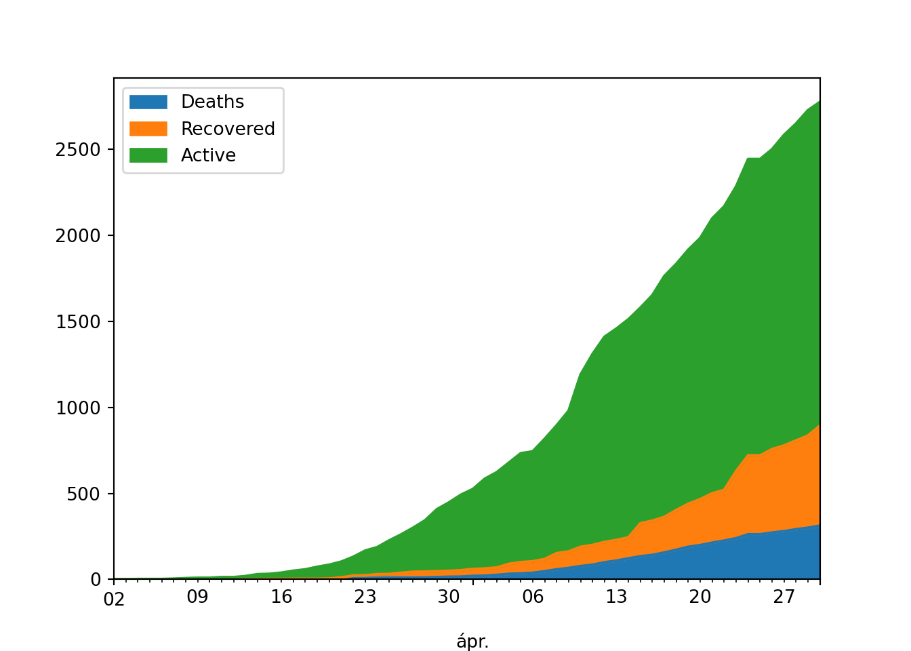
2.8 Aggregálás data frame-ben
Szűrjük le a corona dataframe-ből a legfrissebb adatokat minden országra egy új, corona_latest dataframe-be!
Maximum függvényünk a numpy csomagból, tehát az np névtérből van.
## <class 'pandas.core.frame.DataFrame'>
## Index: 264 entries, 26136 to 26399
## Data columns (total 9 columns):
## # Column Non-Null Count Dtype
## --- ------ -------------- -----
## 0 Province/State 264 non-null object
## 1 Country/Region 264 non-null object
## 2 Lat 264 non-null float64
## 3 Long 264 non-null float64
## 4 Date 264 non-null datetime64[ns]
## 5 Confirmed 264 non-null int64
## 6 Deaths 264 non-null int64
## 7 Recovered 264 non-null int64
## 8 Active 264 non-null int64
## dtypes: datetime64[ns](1), float64(2), int64(4), object(2)
## memory usage: 20.6+ KBItt mivel egy ország akár lehet több régióval is jelen a sorok között országnév szerint össze tudjuk adni az összes megerősített koronavírusos esetet (Confirmed oszlop elemei). Magyarul ország szintre szeretnénk összeg segítségével aggregálni a megerősített koronavírus esetek számát.
Ehhez először a data frame groupby metódusával csoportosítani kell a sorokat ország szintre, majd megadni az összegzendő oszlopot és elsütni ezen oszlop sum metódusát az összegzéshez. Ha a sum-ot avg-re vagy median-ra cseréljük, akkor a kiválasztott oszlopnak nem az összegét, hanem az átlagát, illetve mediánját tudjuk nézni országok szerint. Azaz átlaggal/mediánnal is aggregálhatunk az országok szintjére.
## <class 'pandas.core.series.Series'>
## Index: 187 entries, Afghanistan to Zimbabwe
## Series name: Confirmed
## Non-Null Count Dtype
## -------------- -----
## 187 non-null int64
## dtypes: int64(1)
## memory usage: 2.9+ KB## Country/Region
## Afghanistan 2171
## Albania 773
## Algeria 4006
## Andorra 745
## Angola 27
## Name: Confirmed, dtype: int64Az eredmény nem egy data frame, hanem mint láthatjuk egy Series lett, ami ugyebár logikailag egy numpy tömb! Mivel a groupby során az országok nevéből lett az új sorindex, így csak 1 oszlopunk maradt, az összegzett megerősített esetszám.
Ha azt szeretnénk, hogy a corona_country-ben az országok neve ne indexként, hanem külön oszlopként szerepeljen, akkor használjuk a reset_index() metódust!
## <class 'pandas.core.frame.DataFrame'>
## RangeIndex: 187 entries, 0 to 186
## Data columns (total 2 columns):
## # Column Non-Null Count Dtype
## --- ------ -------------- -----
## 0 Country/Region 187 non-null object
## 1 Confirmed 187 non-null int64
## dtypes: int64(1), object(1)
## memory usage: 3.1+ KB## Country/Region Confirmed
## 0 Afghanistan 2171
## 1 Albania 773
## 2 Algeria 4006
## 3 Andorra 745
## 4 Angola 27Amennyiben a groupby metódus után egy általánosabb agg metódust használunk, akkor a groupby-ban megadott csoportosítás szerint egyszerre több művelet segítségével is összesíthetjük, azaz aggregálhatjuk a számértékű oszlop értékeit (pl. egyszerre nézünk átlagos és medián esetszámokat), Vagy akár több számértékű oszlopot is aggregálhatunk a groupby paraméterei szerint (pl. egyszerre nézünk átlagos esetszámot és halálozást is). Ráadásul, el is tudjuk nevezni az agg függvényen belül az újonnan létrehozott összesítő, azaz aggregált oszlopokat!
Annyi trükk van a dologban, hogy az aggregáláshoz használt függvényeket (medián, átlag, szórás, stb.) a numpy csomagból szedjük ki az np. előtaggal!
Szóval a következő kódrészletben az AtlagAktiv = ("Active", np.mean) rész azt jelenti majd pl, hogy az AtlagAktiv oszlop a létrehozandó kimutatástáblában az eredeti data frame Active oszlopának átlaggal, azaz np.mean függvényével országos szintre összesített (“groupby”-olt) értékeit tartalmazza.
Na, akkor mostmár tényleg készítsünk el egy ország szintű kimutatást az átlagos és medián aktív koronavírus eseteiről, illetve átlagos és medián halálozási számairól a legfrisebb dátumra! Azt is megtehetjük, hogy már az aggregáló kód végére rögtön odatoljuk a reset_index-et.
corona_kimutatas = corona_latest.groupby('Country/Region').agg(
AtlagAktiv = ("Active", np.mean),
MedianAktiv = ("Active", np.median),
AtlagHalal = ("Deaths", np.mean),
MedianHalal = ("Deaths", np.median)
).reset_index()## <string>:1: FutureWarning: The provided callable <function mean at 0x0000021B1B4313A0> is currently using SeriesGroupBy.mean. In a future version of pandas, the provided callable will be used directly. To keep current behavior pass the string "mean" instead.
## <string>:1: FutureWarning: The provided callable <function median at 0x0000021B1B5F8720> is currently using SeriesGroupBy.median. In a future version of pandas, the provided callable will be used directly. To keep current behavior pass the string "median" instead.
## <string>:1: FutureWarning: The provided callable <function mean at 0x0000021B1B4313A0> is currently using SeriesGroupBy.mean. In a future version of pandas, the provided callable will be used directly. To keep current behavior pass the string "mean" instead.## Country/Region AtlagAktiv MedianAktiv AtlagHalal MedianHalal
## 0 Afghanistan 1847.0 1847.0 64.0 64.0
## 1 Albania 272.0 272.0 31.0 31.0
## 2 Algeria 1777.0 1777.0 450.0 450.0
## 3 Andorra 235.0 235.0 42.0 42.0
## 4 Angola 18.0 18.0 2.0 2.0
## .. ... ... ... ... ...
## 182 West Bank and Gaza 266.0 266.0 2.0 2.0
## 183 Western Sahara 1.0 1.0 0.0 0.0
## 184 Yemen 4.0 4.0 2.0 2.0
## 185 Zambia 48.0 48.0 3.0 3.0
## 186 Zimbabwe 31.0 31.0 4.0 4.0
##
## [187 rows x 5 columns]Azt látjuk, hogy az átlag és medián értékek mind az aktív esetek számára, mind a halálozási számokra megegyeznek. Ez azért van, mert a legtöbb ország ugyebár nem volt lebontva államokra és provinciákra, szóval egy nap csak egy érték érkezett a táblába rájuk mindenből. Egy értéknek pedig nyilván ugyan az az átlaga és a mediánja is! :)
Na, de lessünk meg pár olyan országot, ahol az adatok belső régiókra, provinciákra is le voltak bontva. Pl. Franciaország és az Egyesült Királyság ilyen országok voltak:
## Country/Region AtlagAktiv MedianAktiv AtlagHalal MedianHalal
## 62 France 8409.909091 31.0 2219.090909 1.0
## 177 United Kingdom 13161.818182 13.0 2440.181818 1.0Na itt már látszik az eltérés! Pl. a francia tartományok felében legfeljebb \(31\) aktív koronavírusos eset volt csak 2020.04.30-án, de a tartományok átlagában az érték már kerektíve \(8410\) eset! Ezt valószínűleg egy vagy kettő kiugróan sok esettel rendlkező tartomány okozza csak!
2.9 Egyszerű leíró statisztika data frame-ben
No, de most térjünk vissza a corona_country data frame-hez! Egyszerűsítsük az oszlopneveket! A data frame-k columns tulajdonságának felülírásával az oszlopnevek könnyen módosíthatók. Mivel ugye a columns tulajdonságban az összes oszlopnév szerepel listaként, így az új oszlopneveket listaként felsorolva [] jellel kell megadni.
## <class 'pandas.core.frame.DataFrame'>
## RangeIndex: 187 entries, 0 to 186
## Data columns (total 2 columns):
## # Column Non-Null Count Dtype
## --- ------ -------------- -----
## 0 Country 187 non-null object
## 1 COVID_Cases 187 non-null int64
## dtypes: int64(1), object(1)
## memory usage: 3.1+ KBNézzünk egy komplett leíró statisztikát a COVID_Cases változóra/ismérvre/oszlopra a describe metódus segítségével. Kerekítsük az eredményeket 2 tizedesjegyre (round függvény).
## count 187.00
## mean 17416.26
## std 84414.11
## min 1.00
## 25% 97.50
## 50% 746.00
## 75% 6254.50
## max 1069424.00
## Name: COVID_Cases, dtype: float64Nézzük meg ezt az ordenáré módon jobbra elnyúló eloszlást hisztogramon és doboz ábrán is!
A hisztogramot simán a vizsgált oszlop hist metódusával le lehet kérni.
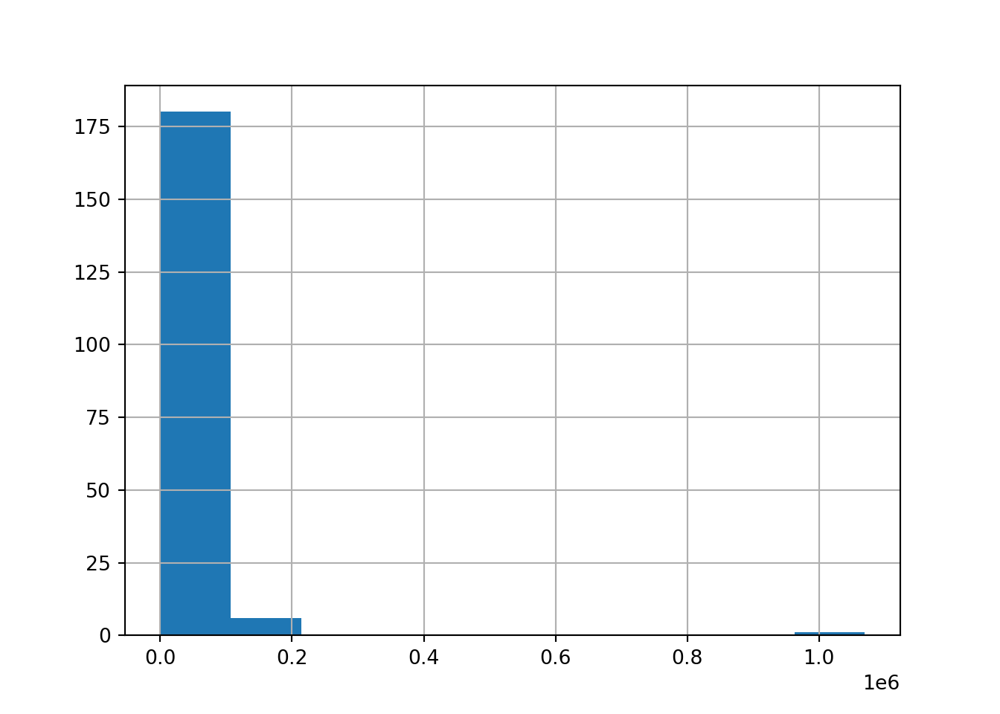
Alapból egyenlő hosszúságú osztályközötket képez a pitonállat a hisztogramokhoz, aminek a számát a hist függvényben a bins paraméteren keresztül tudjuk szabályozni.
Vigyük le pl. az osztályközök számát \(5\)-re.
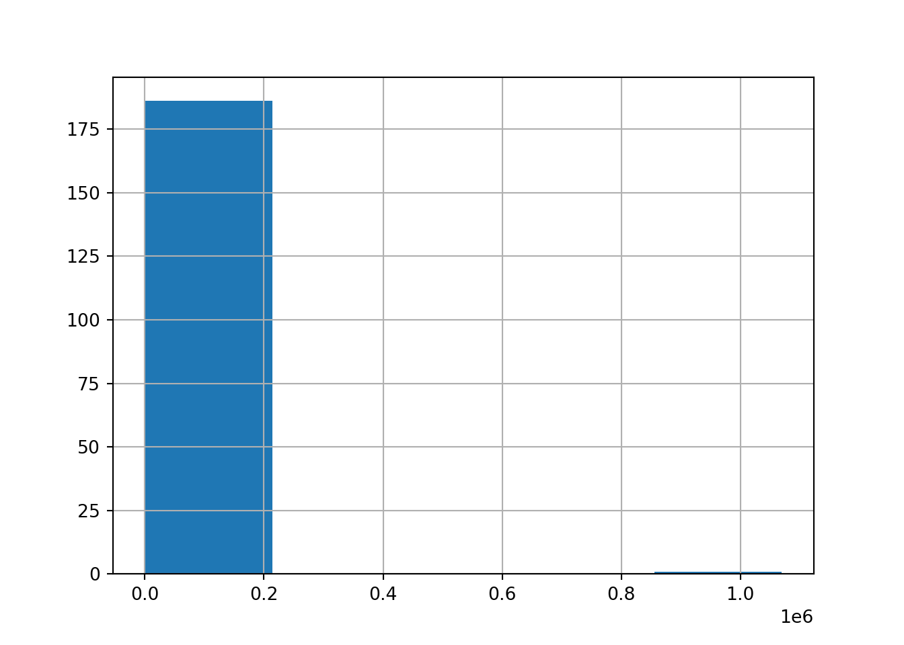
A boxplot metódus már alapvetően data frame, és nem oszlop szinten működik, és a metódus paraméterében kell megadni, hogy mely oszlopra vagy oszlopokra (neveket listaként felsorolva [] jellel) akarjuk az ábrát. Tehát, a doboz ábrát egyszerre több oszlopra is lekérhetjük egy ábrán belülre akár. Majd mindjárt nézünk ilyet is. Ennek a doboz ábránál van értelme, hiszen doboz ábránál nincsenek osztályközök, amiknek a számát esetlegesen az ismérvünk (oszlopunk) eloszlására kell szabni.
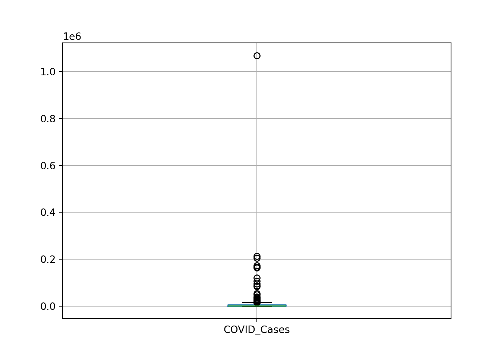
2.10 Adatminőségi problémák felismerése és kezelése leíró statisztika segítségével
Olvassuk be a population_by_country_2020.csv nevű fájlt, és mentsük el a beolvasott adatokat egy population nevű data frame-be!
## <class 'pandas.core.frame.DataFrame'>
## RangeIndex: 235 entries, 0 to 234
## Data columns (total 11 columns):
## # Column Non-Null Count Dtype
## --- ------ -------------- -----
## 0 Country (or dependency) 235 non-null object
## 1 Population (2020) 235 non-null int64
## 2 Yearly Change 235 non-null object
## 3 Net Change 235 non-null int64
## 4 Density (P/Km²) 235 non-null int64
## 5 Land Area (Km²) 235 non-null int64
## 6 Migrants (net) 201 non-null float64
## 7 Fert. Rate 235 non-null object
## 8 Med. Age 235 non-null object
## 9 Urban Pop % 235 non-null object
## 10 World Share 235 non-null object
## dtypes: float64(1), int64(4), object(6)
## memory usage: 20.3+ KBA population dataframe-ből csak az országnév, népesség, népsűrűség és városi népesség aránya változókra lesz szükségünk.
A többit törölhetjük is a data frame-ből! Mivel az oszlopnevekben mint fentebb láthatjuk elég sok a hányadék módon speciális karakter, így biztonságosabb most az oszlopokra a sorszámukkal hivatkozni. Láthatjuk az info metódus eredményéből, hogy a szükséges országnév, népesség, népsűrűség és városi népesség aránya oszlopok rendre a \(0,1,4,9\) indexekkel bírnak.
## <class 'pandas.core.frame.DataFrame'>
## RangeIndex: 235 entries, 0 to 234
## Data columns (total 4 columns):
## # Column Non-Null Count Dtype
## --- ------ -------------- -----
## 0 Country (or dependency) 235 non-null object
## 1 Population (2020) 235 non-null int64
## 2 Density (P/Km²) 235 non-null int64
## 3 Urban Pop % 235 non-null object
## dtypes: int64(2), object(2)
## memory usage: 7.5+ KBEgyszerűsítsük az oszlopneveket a population dataframe-ben!
## <class 'pandas.core.frame.DataFrame'>
## RangeIndex: 235 entries, 0 to 234
## Data columns (total 4 columns):
## # Column Non-Null Count Dtype
## --- ------ -------------- -----
## 0 Country 235 non-null object
## 1 Pop 235 non-null int64
## 2 PopDensity 235 non-null int64
## 3 UrbanPop 235 non-null object
## dtypes: int64(2), object(2)
## memory usage: 7.5+ KBNézzük meg a population dataframe egyszerű leíró statisztikai mutatóit! Ha a describe metódust az egész data frame-n engedjük el, akkor minden numerikus (int vagy float) oszlopra megadja az alap leíró mutatókat.
## Pop PopDensity
## count 2.350000e+02 235.00
## mean 3.316936e+07 475.77
## std 1.351374e+08 2331.29
## min 8.010000e+02 0.00
## 25% 3.988760e+05 37.00
## 50% 5.459642e+06 95.00
## 75% 2.057705e+07 239.50
## max 1.439324e+09 26337.00Az UrbanPop változónak mi baja? Elviekben az egy arányszám, annak is számnak kéne lennie, és meg kéne jelennie a describe metódus eredményében!
Kukkantsunk csak bele a data frame első 5 sorába!
## Country Pop PopDensity UrbanPop
## 0 China 1439323776 153 61%
## 1 India 1380004385 464 35%
## 2 United States 331002651 36 83%
## 3 Indonesia 273523615 151 56%
## 4 Pakistan 220892340 287 35%Áhhá! Százalékjel van benne! Ezért veszi szöveges adatnak a pitonállat!
Szedjük le ezt a százalékjelet! Erre szerencsére az egyes data frame oszlopoknak van egy str.replace metódusa, amiben megadhatjuk paraméterekkel, hogy az oszlopban milyen szövegrészleteket mire akarunk cserélni. Itt most ugyebár százalékjelet fogunk üres stringre cserélni.
## Country Pop PopDensity UrbanPop
## 0 China 1439323776 153 61
## 1 India 1380004385 464 35
## 2 United States 331002651 36 83
## 3 Indonesia 273523615 151 56
## 4 Pakistan 220892340 287 35Ez jó, de sajnos vannak benne hiányzó értékek, amik nem a szabványos Python NaN kóddal vannak jelölve, hanem ilyen spéci “N.A.” stringgel, amit a gépállat nem ismer fel, így az egész oszlopot str-nek (object) veszi a numpy tömbök egységes adattípus logikája alapján.
## <class 'pandas.core.frame.DataFrame'>
## RangeIndex: 235 entries, 0 to 234
## Data columns (total 4 columns):
## # Column Non-Null Count Dtype
## --- ------ -------------- -----
## 0 Country 235 non-null object
## 1 Pop 235 non-null int64
## 2 PopDensity 235 non-null int64
## 3 UrbanPop 235 non-null object
## dtypes: int64(2), object(2)
## memory usage: 7.5+ KBAzt, hogy az object adattípus turpisságát az “N.A.”-k okozzák az UrbanPop oszlopban, arra leginkább az oszlop gyakorisági táblájából lehet felismerni. Ezt a gyakorisági táblát az oszlop value_counts metódusával tudjuk lekérni.
## UrbanPop
## N.A. 13
## 57 7
## 88 7
## 63 6
## 87 6
## ..
## 50 1
## 81 1
## 28 1
## 37 1
## 10 1
## Name: count, Length: 81, dtype: int64Láthatjuk, hogy a sok számérték mellett, 13 ország esetén hiányzó értékünk van ezzel a csúnya “N.A.” kóddal.
Na, akkor! Most csináljuk azt, hogy leszűrjük azt a 13 országot, ahol hiányzik a városi népesség arányára vonatkozó adat!
Ezek után próbáljuk meg a városi népesség arányára vonatkozó adatot int típusúvá konvertálni! Ha sikerült, nézzük meg a változó alap leíró statisztikai mutatóit is!
Először logikai indexszeléssel leszűrjük az “N.A.”-kat.
Majd az oszlop astype metódusával int-é konvertáljuk az egész oszlopot. A metódus paraméterében kell megadni, hogy milyen adattípusra akarjuk konvertálni kiszemelt kis oszlopunk! :) Végül jöhet a describe.
## Pop PopDensity UrbanPop
## count 2.220000e+02 222.000000 222.000000
## mean 3.488611e+07 186.373874 59.234234
## std 1.388508e+08 288.271695 24.230400
## min 1.357000e+03 0.000000 0.000000
## 25% 5.444048e+05 35.000000 43.000000
## 50% 5.911701e+06 89.000000 60.500000
## 75% 2.321589e+07 224.500000 79.000000
## max 1.439324e+09 2239.000000 100.000000Úgy tűnik, helyreállt a világ rendje! Már nagyon szépen le tudjuk olvasni pl., hogy a Föld országainak legzsúfoltabb \(25\%\)-ban legalább \(79\) fő/Km² a népsűrűség. És azt is látni a countból, hogy már csak \(222\) országunk van a kezdeti \(235\) helyett, szóval nincsen itt a \(13\) “N.A.”.
2.11 Data frame-k összekapcsolása
Akkor most álmodjunk egy nagyot! Kössük össze a population data frame-ben található országonkénti alapvető demográfiai ismérveket a corona_country data frame-ben lakó országonkénti koronavírus esetszámokkal.
Nyilván ezt az összekötést az országok nevén keresztül lehet megtenni. Azaz pl. a magyar koronavírus esetszámokhoz a magyar demográfiai adatoknak kell kerülnie értelemszerűen. :)
A pandas csomagnak létezik egy merge névre hallgató függvénye, ami két data frame-et összeköt egy előre megadott közös oszlop alapján. Esetünkben ez a közös oszlop az országnév lesz.
Ha egy kicsit “adatbázisabbul” szeretném kifejezni magam, akkor azt mondanám, hogy a merge függvény 2 tábla joinját oldja meg egy közös kulcs alapján.
Sőt, a merge függvény mindhárom alapvető táblakapcsolási módszert támogatja:
- inner join: Az összekötött táblában csak azok a sorok maradnak meg, amelyek mindkét data frame-ben szerepelnek.
- left join: Az összekötött táblában csak azok a sorok maradnak meg, amelyek az elsőre megnevezett data frame-ben szerepelnek (attól függetlenül, hogy a másodszorra megnevezett táblában van-e hozzájuk találat).
- right join: Az összekötött táblában csak azok a sorok maradnak meg, amelyek a másodszorra megnevezett data frame-ben szerepelnek (attól függetlenül, hogy az elsőre megnevezett táblában van-e hozzájuk találat).
- full outer join: Az összekötött táblában mindkét tábla minden sora megmarad.
A különböző típusú összekötési módokat remekül lehet halmazábrákkal szemléltetni:

Na, akkor mielőtt a tényleges merge-hez hozzálátunk, annyit ellenőrizzünk le, hogy ugyanaz-e a neve az országneveket tartalmazó oszlopnak mindkét data frame-ben, a populationben és a corona_country-ban is:
## Index(['Country', 'COVID_Cases'], dtype='object')## Index(['Country', 'Pop', 'PopDensity', 'UrbanPop'], dtype='object')Szuper, mindkét táblában egységesen ‘Country’ az összekötésre használandó oszlop neve! Nem meglepő, mert mindkét táblában átneveztük már korábban az oszlopokat, de azért jobb biztosra menni. :)
Akkor lássuk azt a merge-t! Most egy olyan összekötést csinálunk, hogy a corona_country táblában lévő összes sorunk maradjon meg az összekötött táblában, mert alapvetően azok az országok érdekelnek, ahol megvan a COVID fertőzöttek száma. Ez az én data frame megadási sorrendben majd egy left joint fog jelenteni. :)
A merge függvényben a két data frame megadása után a how paraméter szabályozza a join jellegét, míg az on paraméterben adjuk meg az összekötésre használt oszlop nevét. A join tehát azért lesz left, mert a corona_country-t adtam meg először, azaz “balrább”. :)
corona_extended = pd.merge(corona_country, population, how='left', on='Country')
corona_extended.info()## <class 'pandas.core.frame.DataFrame'>
## RangeIndex: 187 entries, 0 to 186
## Data columns (total 5 columns):
## # Column Non-Null Count Dtype
## --- ------ -------------- -----
## 0 Country 187 non-null object
## 1 COVID_Cases 187 non-null int64
## 2 Pop 168 non-null float64
## 3 PopDensity 168 non-null float64
## 4 UrbanPop 168 non-null float64
## dtypes: float64(3), int64(1), object(1)
## memory usage: 7.4+ KBNa, hát az új data frame info metódusa alapján van egy kis probléma. \(187-168=19\) országra a corona_country data frame-ben nem volt találat a population data frame-ben.
2.11.1 A kapcsolási kulcsnak használt oszlop ellenőrzése és javítása
Lessük meg mik ezek az országok, ahol nem volt találat a population data frame-ben! Ezt pl. úgy tudjuk megtenni, hogy lekérdezzük a hiányzó értékek országát a Pop oszlopban.
## 27 Burma
## 39 Congo (Brazzaville)
## 40 Congo (Kinshasa)
## 42 Cote d'Ivoire
## 46 Czechia
## 48 Diamond Princess
## 75 Holy See
## 91 Kosovo
## 92 Kuwait
## 102 MS Zaandam
## 113 Monaco
## 140 Saint Kitts and Nevis
## 142 Saint Vincent and the Grenadines
## 144 Sao Tome and Principe
## 150 Singapore
## 164 Taiwan*
## 173 US
## 180 Venezuela
## 182 West Bank and Gaza
## Name: Country, dtype: objectElnézegetve az országneveket kialakulhat bennünk valami sejtés: valószínűleg ezeket az országokat máshogy hívják a population data frame-ben, mint a corona_country-ban. Pl. Taiwan nevében valószínűleg nem lesz csillag, vagy Czechia-t inkább a hivatalosabb nevén jegyezheti a population tábla: Czech Republic. Esetleg a US is inkább United States-ként szerepelhet.
Teszteljük le ezeket az elméleteket egy egyszerű logikai indexes szűréssel az isin metódussal megtámogatva.
## 2 United States
## 56 Taiwan
## Name: Country, dtype: objectMintha bejönne az okoskodásunk, de a cseheket csak nem akarja megtalálni a cucc. Próbáljunk meg úgy szűrni, hogy ne pontosan keressük ezeket az országneveket, hanem azt nézzük meg, hogy mik azok a sorok a population data frame-ben, amik ezeket az országneveket tartalmazzák valahol a Country oszlopban.
Ezt egyszerűen el tudjuk érni úgy, hogy az előző kódunkban az isin metódust str.contains-re cseréljük. Annyi van, hogy itt a keresett string mintázatokat egy stringben kell megadni (azaz NEM listaként) “|” jellel elválasztva őket.
Ez így amúgy egy úgynevezett RegEx kifejezés, és ilyenekkel lehet komplexebben működtetni ezt a str.contains metódust. Az érdeklődőknek jó kiindulópont a link. :)
## 2 United States
## 56 Taiwan
## 85 Czech Republic (Czechia)
## Name: Country, dtype: objectÓ, hogy a kedves felmenőiket a population data frame alkotóinak: hát nem ott van zárójelben a Czech Republic mögött, hogy Czechia?! “Ripsz!”
Hát valami hasonló módon be kéne lőni a maradék 16 nem egyező országnevet is, de most ezzel nem húzzuk a drága időnket, hanem javítjuk ezt a 3 esetet és újra összekötjük a tábláinkat.
Aki a nem egyértelmű kapcsoló oszlop (kulcs) alapján történő data frame összekötés világában szeretne elmélyedni, neki érdemes lehet majd előbb-utóbb utána néznie a fuzzy join technikáknak, amiket a Pythonban pl. a difflib csomag támogat. De ezek a megoldások az itteni bevezető példának a kereteit bőven megugorják komplexitásban.
Szóval, akkor a 3 azonosított eltérő országnevet javítsuk a population data frame-ben. Azaz ott átírjuk ezeket az országneveket arra a verzióra, ami a corona_country-ban is szerepel. Ehhez megint az str.replace-t használjuk, mint anno az UrbanPop oszlop százalékjeleinek eltávolításakor. Ezt mindhárom esetben külön meg kell sajnos tenni.
population['Country'] = population['Country'].replace('United States', 'US')
population['Country'] = population['Country'].replace('Czech Republic (Czechia)', 'Czechia')
population['Country'] = population['Country'].replace('Taiwan', 'Taiwan*')És akkor lássuk újra azt a merge-t! Most a többi nem kezelt esetet eldobjuk, szóval inner joint csinálunk.
corona_extended = pd.merge(corona_country, population, how='inner', on='Country')
corona_extended.info()## <class 'pandas.core.frame.DataFrame'>
## RangeIndex: 171 entries, 0 to 170
## Data columns (total 5 columns):
## # Column Non-Null Count Dtype
## --- ------ -------------- -----
## 0 Country 171 non-null object
## 1 COVID_Cases 171 non-null int64
## 2 Pop 171 non-null int64
## 3 PopDensity 171 non-null int64
## 4 UrbanPop 171 non-null int32
## dtypes: int32(1), int64(3), object(1)
## memory usage: 6.1+ KBSzupszi! Már nem \(168\) sor van, amire van találat mindkét data frame-ben, mint az előbb, hanem \(171\), azaz pont a megjavított \(3\) országgal több! Na, erre már elő lehet venni az ünnepi laposüveget (leánykori nevén lapiüvit)! ;)
2.12 Kilógó értékek keresése és kezelése
A sikeres data frame összekötési művelet örömére, számoljuk ki a corona_extended dataframe-ben az egymillió főre jutó COVID-19 esetek számát minden országra! Aztán nézzük is meg az oszlop leíró statisztikáit!
corona_extended['COVID_perMillion'] = corona_extended.COVID_Cases / corona_extended.Pop * 1000000
corona_extended['COVID_perMillion'].describe()## count 171.000000
## mean 747.439425
## std 1775.534029
## min 0.201167
## 25% 19.420289
## 50% 119.830206
## 75% 700.197689
## max 16769.325985
## Name: COVID_perMillion, dtype: float64Na, szuper, itt is látszik egy csodás jobbra elnyúló eloszlás, hiszen az országok \(\frac{3}{4}\)-ének az egymillió főre vetített COVID esetszáma nem haladja meg a \(700\)-at, de ellenben a legnagyobb érték már majdnem \(17\) ezer fő! Ellenben az alsó \(25\%\) határa, a \(19.4\) egészen közel van a minimumhoz, a \(0.2\)-höz. Szóval valószínűleg brutál felfelé kilógó elemeink vannak.
Ezt erősítsük is meg egy doboz ábrán.
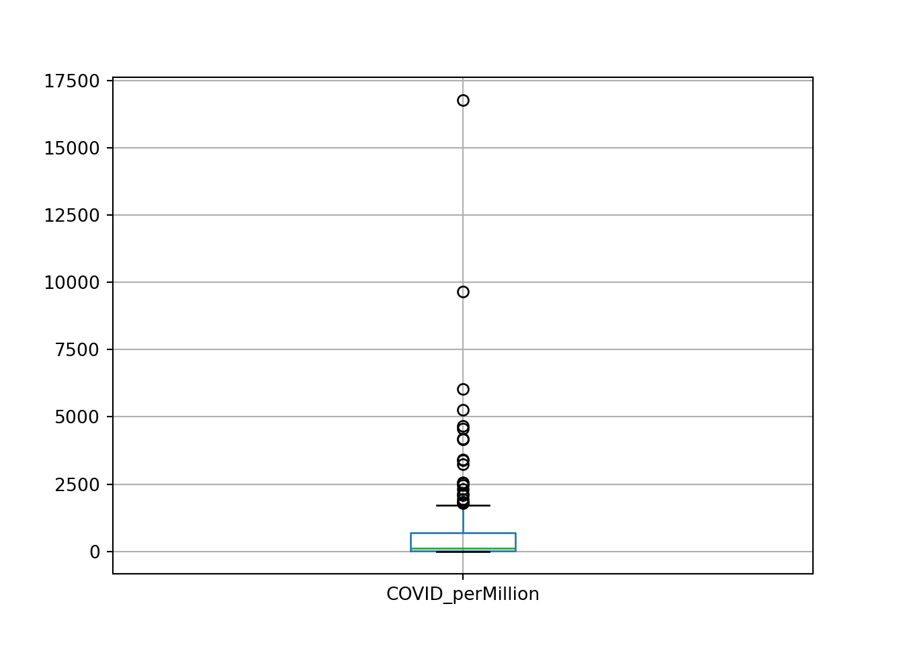
Az ábra alapján nagyjából olyan 3000 feletti értékek tűnnek extrém módon kilógónak (kb. 3000-nél van az első szakadás a dobozban a ponttal jelölt kilógó értékek körében; a szakadás alatti részek, még kb a normál adatok “természetes” folytatásának tekinthetők). Lássuk hát, hogy mik ezek!
Rendezzük a COVID_perMillion szerint csökkenő sorrendbe a data frame-t, és kérjük le a sorbarendezett verzióból azokat az értékeket, ahol a COVID_perMillion nagyobb, mint 3000!
A data frame-t sorba rendezni a sort_values metódussal lehet, amelynek paraméterében meg kell adni, hogy mely oszlop alapján rendezünk, és hogy a sorrend csökkenő vagy növekvő-e. Majd ezen a rendezett állapoton elsüthetünk pl. egy iloc-ot az első 10 sor kiválasztásához.
corona_extended.sort_values('COVID_perMillion', ascending=False).loc[corona_extended['COVID_perMillion'] > 3000,:]## Country COVID_Cases ... UrbanPop COVID_perMillion
## 131 San Marino 569 ... 97 16769.325985
## 3 Andorra 745 ... 88 9642.140685
## 93 Luxembourg 3784 ... 88 6044.940877
## 72 Iceland 1797 ... 94 5266.042087
## 126 Qatar 13409 ... 96 4654.201086
## 143 Spain 213435 ... 80 4564.987989
## 16 Belgium 48519 ... 98 4186.417453
## 77 Ireland 20612 ... 63 4174.340484
## 148 Switzerland 29586 ... 74 3418.520185
## 79 Italy 205463 ... 69 3398.226842
## 159 US 1069424 ... 83 3230.862341
##
## [11 rows x 6 columns]Na, úgy néz ki, hogy az érintett országok töbségében ilyen jó kicsi, zsúfolt államok. Persze vannak extrém kivételek, pl. ugye az olaszok a nagy repülős turistaforgalmuk miatt.
Na, ezeket az extrém módon kilógó értékeket kipucoljuk a data frame-ből, aztán ránézünk újra a COVID_perMillion doboz ábrájára. Most a kilógó értékeket vegyük csak a 4000 feletti esetszámoknak, mivel a sorrend alapján van egy nagyobb ugrás ott a svájci 3418-ról az ír 4174-re. Meg a doboz ábrán is látszik, hogy ez az utolsó 3 érték ebben a “toplistában” még azért közelebb van az adatok “természetes folytatásához”, és utána jön még egy ugrás az egymillió főre vetített esetszámokban.
corona_extended = corona_extended[corona_extended['COVID_perMillion'] < 4000]
corona_extended.boxplot(column="COVID_perMillion")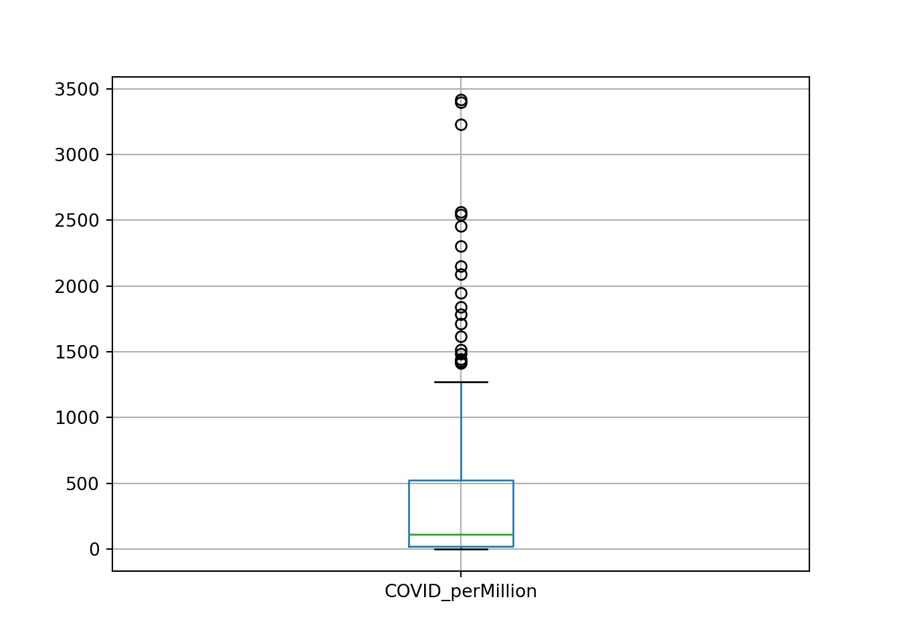
Ez már egy kulturáltabb jobbra elnyúló eloszlás. Viszont, a medián még mindig túlságosan közel van az alsó kvartilishez, és a felső kvartilis eléggé elszakad.
Ennek szellemében még nézzünk rá arra, hogy mely országok esnek az egymillió főre jutó COVID esetszám szerint az alsó kvintilisbe!
Egy data frame oszlop alsó kvintilisét az oszlop quantile metódusával számoljuk ki. A metódus alapvetően egy tetszőleges percentilist számol ki. Azt, hogy melyiket, azt a metódus paraméterében kell megadni \(0-1\) közötti számként. Szóval az alsó kvintilis alias 20. percentilis, ami alatt az adatok \(20\%\)-a található, egy \(0.2\) paraméterrel lesz megadható.
## 10.058723607815136Ezt a fenti kódot felhasználva egy logikai indexes szűrésben gyorsan meg is lesznek a népességarányos esetszám szerinti alsó kvintilisbe tartozó országok nevei is.
corona_extended[corona_extended['COVID_perMillion'] <
corona_extended['COVID_perMillion'].quantile(0.2)]## Country COVID_Cases ... UrbanPop COVID_perMillion
## 4 Angola 27 ... 67 0.821511
## 18 Benin 64 ... 48 5.279134
## 19 Bhutan 7 ... 46 9.071964
## 22 Botswana 23 ... 73 9.780463
## 27 Burundi 11 ... 14 0.925086
## 29 Cambodia 122 ... 24 7.297102
## 33 Chad 73 ... 23 4.444211
## 37 Comoros 1 ... 29 1.149953
## 54 Ethiopia 131 ... 21 1.139491
## 59 Gambia 11 ... 59 4.551722
## 69 Haiti 81 ... 57 7.103688
## 84 Kenya 396 ... 28 7.364524
## 86 Laos 19 ... 36 2.611483
## 90 Libya 61 ... 78 8.877515
## 94 Madagascar 128 ... 39 4.622437
## 95 Malawi 37 ... 18 1.934140
## 100 Mauritania 8 ... 57 1.720557
## 107 Mozambique 76 ... 38 2.431577
## 108 Namibia 16 ... 55 6.296969
## 109 Nepal 57 ... 21 1.956288
## 112 Nicaragua 14 ... 57 2.113350
## 114 Nigeria 1932 ... 52 9.372290
## 120 Papua New Guinea 8 ... 13 0.894152
## 142 South Sudan 35 ... 25 3.126752
## 149 Syria 43 ... 60 2.457050
## 151 Tajikistan 15 ... 27 1.572715
## 152 Tanzania 480 ... 37 8.035595
## 160 Uganda 83 ... 26 1.814564
## 166 Vietnam 270 ... 38 2.773823
## 167 Western Sahara 6 ... 87 10.044548
## 168 Yemen 6 ... 38 0.201167
## 169 Zambia 106 ... 45 5.765897
## 170 Zimbabwe 40 ... 38 2.691260
##
## [33 rows x 6 columns]Az eredmények alapján úgy néz ki, hogy az egymillió főre jutó COVID esetszám szerinti alsó kvintilisbe elsősorban olyan afrikai országok esnek, ahol még 2020.04.30-án egyelőre nem tört ki tömeges járvány!
Ezeket az országokat távolítsuk el a corona_country dataframe-ből!
Majd ezután tekintsük meg ismét az egymillió főre jutó COVID esetszám hisztogramját, és doboz ábráját!
corona_extended = corona_extended[corona_extended['COVID_perMillion'] >
corona_extended['COVID_perMillion'].quantile(.2)]
corona_extended.boxplot(column="COVID_perMillion")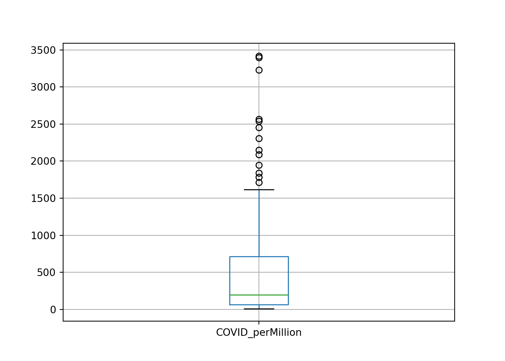
Na, ez már kb úgy néz ki, mint egy “egészségesen” jobbra elnyúló eloszlás doboz ábrája! :)
2.13 Korrelációs elemzések data frame-ben
Nézzünk rá a numerikus adattípusú oszlopok közti korrelációs mátrixra. Egyedül a Pop és COVID_Cases oszlopokat hagyjuk ki a vizsgálatból, mert azok abszolút és nem népességarányos adatok, így csalóka lenne őket szerepeltetni a korrelációs vizsgálatokban, hiszen “triviálisan” korrelálnak: nagyobb népességű országban nyilván több az összes esetszám. :)
Azt, hogy csak két oszlopot ne válasszunk ki egy data frame-ben úgy tudjuk elérni, hogy a data frame oszlopnevei közül egy isin metódussal kiválasztjuk a két kihagyandó oszlopot, majd az eredményt letagadjuk egy ~ jellel. Ezt a műveletet pedig beágyazzuk egy loc metódusba, és meg is vagyunk! :)
## Country PopDensity UrbanPop COVID_perMillion
## 0 Afghanistan 60 25 55.769130
## 1 Albania 105 63 268.608244
## 2 Algeria 18 73 91.354724
## 5 Antigua and Barbuda 223 26 245.075514
## 6 Argentina 17 93 97.973762
## .. ... ... ... ...
## 161 Ukraine 75 69 237.939741
## 162 United Arab Emirates 118 86 1261.930506
## 163 United Kingdom 281 83 2540.744366
## 164 Uruguay 20 96 185.103621
## 165 Uzbekistan 79 50 60.921678
##
## [130 rows x 4 columns]Erre az oszlopaiban megvágott data frame-re pedig egy corr nevű metódust tudunk alkalmazni, ami megadja a numerikus oszlopok közti korrelációk mátrixszát. Figyeljünk még arra, hogy a Country oszlopot is ki kell szedni a korrelációszámításban érintett oszlopok közül, hiszen nem numerikus adattípusú, így a korrelációszámítás nem értelmezett rajta! Ennyire azért nem okos ez a pitonka kígyócska! :)
## PopDensity UrbanPop COVID_perMillion
## PopDensity 1.000000 -0.051282 0.118036
## UrbanPop -0.051282 1.000000 0.341160
## COVID_perMillion 0.118036 0.341160 1.000000A korrelációs mátrixból látszik, hogy az egymillió főre jutó COVID esetszám leginkább a városi népesség arányával függ össze, teljesen logikus módon: egyirányú, közepes erősségű a kapcsolat. A zsúfolt városi közösségi tereken, tömegközlekedésen könnyebb megfertőződni. :)
Nézzük is meg a kapcsolatot pontdiagramon! Teljesen úgy működik a pontdiagram is, mint pl. a korábbiakban a magyar adatokon látott területdiagram, csak a metódus neve nem plot.area, hanem plot.scatter. :)
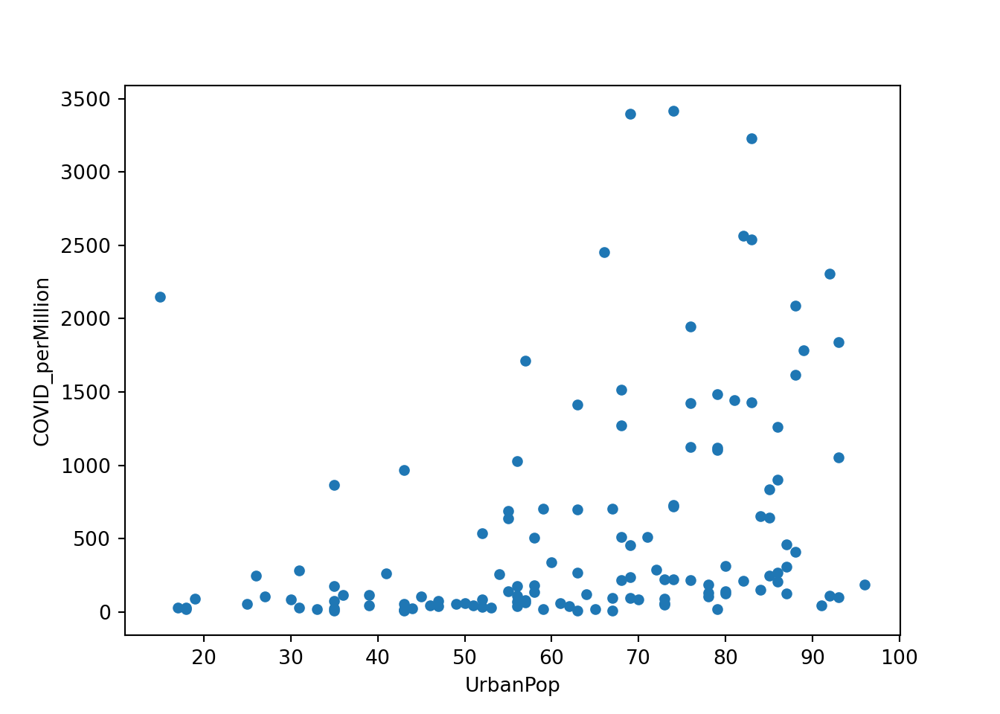
A pontdiagramon azt vehetjük észre, hogy az egymillió főre jutó COVID esetszám jobbra elnyúló eloszlása miatt jelenlévő felfelé kiugró értékek befolyásolják a két ismérv kapcsolatát. A kilógóan magas esetszámok miatt úgy tűnik, mintha az 500 alatti esetszámú országokban nem is lenne kapcsolat a két ismérv között.
A városi népesség arányával nincsenek ilyen problémák, mivel annak eloszlása közel szimmetrikus.
A két ismérv/oszlop eloszlásáról írtakat a hisztogramokon is meg lehet lesni.
Az egymillió főre jutó esetszám hisztogramja, ami elég jobbra elnyúló.
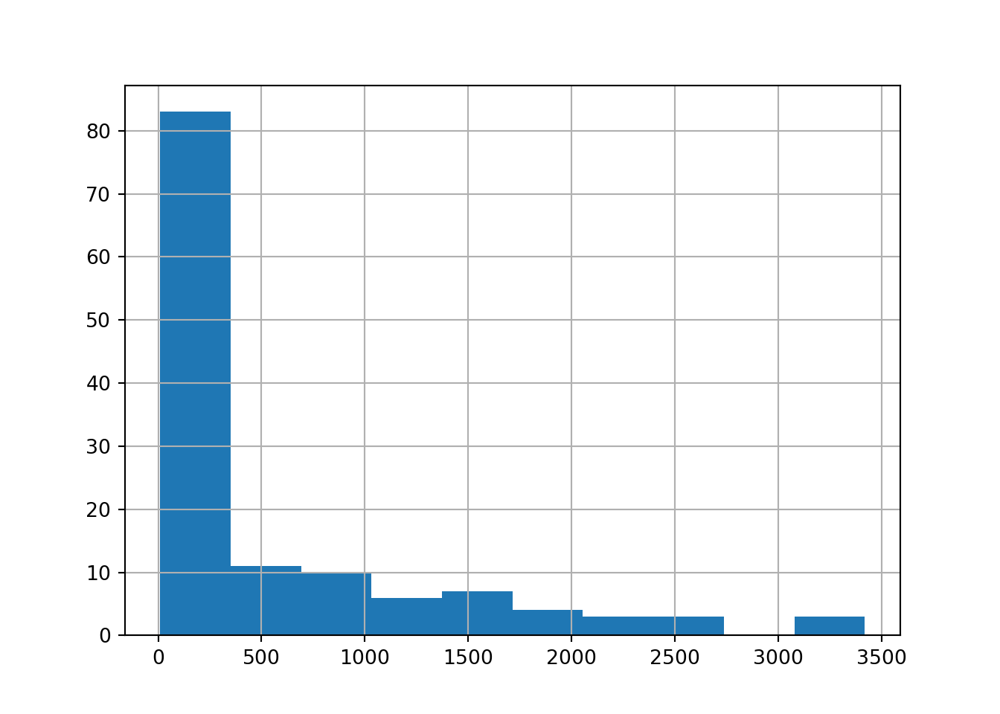
És a városi népesség arányáé, ami szimmetrikusabb egy fokkal, de némileg inkább balra elnyúló. A lényeg, hogy ezen nem segít a logaritmus. :)
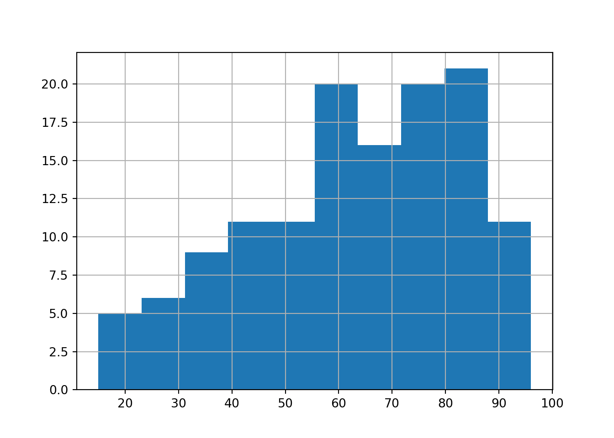
A kiugró értékek hatását, és az eloszlás jobbra elnyúlóból közel szimmetrikussá alakítását logaritmussal lehet elérni.
Készítsük is el a COVID_perMillion oszlop természetes alapú logaritmusát egy új oszlopban a data frame-n belül.
Ezek után lessünk rá az új oszlop hisztogramjára:
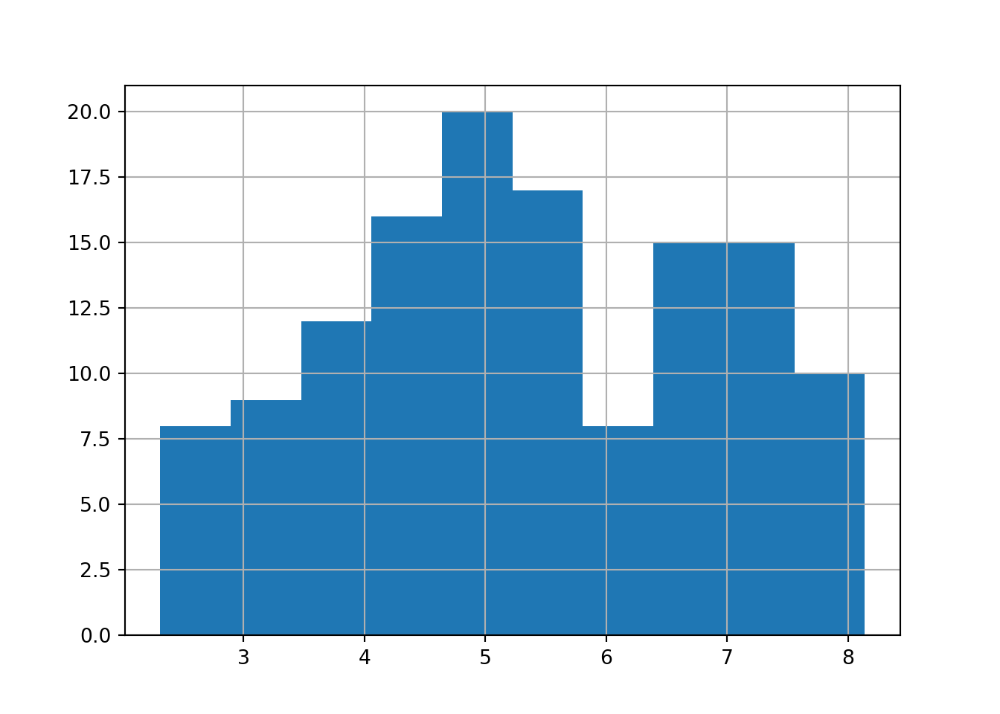
Sokkal szebb! :) Legalábbis szimmetria szempontjából biztos. Viszont van benne azért egy kétmóduszú jelleg. Ez azt jelenti, hogy van az országoknak egy jelentősebb csoportja, ahol emelkedettebb a népességarányos COVID esetszám, mint az országok többségében, akik az alacsonyabb értéktartományban lévő “első móduszt” adják.
A korreláció az esetszám logaritmusa és a városi népesség aránya között pedig feljavul. Abszolút értékben több, mint \(0.1\) egységet emelkedik a korreláció, ami nem elhanyagolható mértéjű javulás. :) Most a korrelációs mátrixból kivesszük a PopDensity-t is, hogy áttekinthetőbb legyen.
corona_extended.loc[:,~corona_extended.columns.isin(['Country', 'COVID_Cases', 'Pop', 'PopDensity'])].corr()## UrbanPop COVID_perMillion log_COVID_perMillion
## UrbanPop 1.000000 0.341160 0.464379
## COVID_perMillion 0.341160 1.000000 0.826654
## log_COVID_perMillion 0.464379 0.826654 1.000000A korreláció abszolút értékében bekövetkezett javulás oka szépen látható a pontdiagramon: nincsenek már olyan durva outlierek a pontdiagramon. A pontokra nagyobb pontossággal illeszthető egy képzeletbeli egyenes a teljes tartományon nem csak az 500 feletti egymilliófőre vetített esetszámmal bíró országokban.
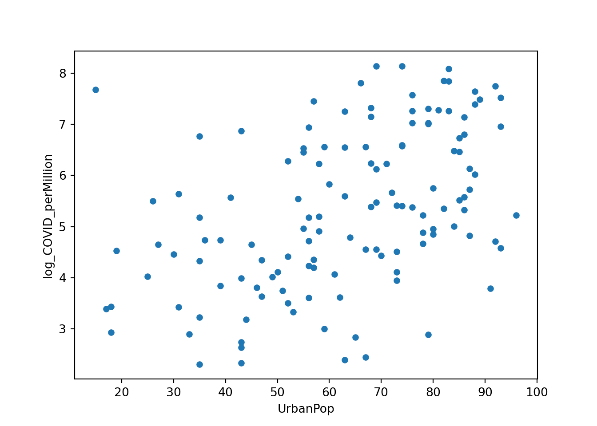
Annyit lehet látni, hogy van egy ország, aminek hatalmas az egymillió főre jutó COVID esetszáma az elég alacsony, \(20\%\) alatti városi népesség arányához képest. Jó lenne rájönni mi ez az ország!
Ehhez csináljunk egy olyan verziót az előző pontdiagramból, amin minden ponton szerepel, hogy az melyik országot jelöli.
Ennek elkészítéséhez felhasználunk egy enumerate névre hallgató függvényt. Ha ezt a függvényt ráeresztjük a Country oszlopra a data frame-ben, és az eredményt egy for ciklussal bejárjuk, akkor igazából két listát is bejárunk prhuzamosan:
- Egyet, ami az ország sorszámát mutatja a data frame-ben \(0\)-tól indexszelve. Ezt hívom én
sorszám-nak. - A másik listában pedig az országnevek vannak. Ez a kódban
szöveg-nek becézem.
Fontos, hogy a két listát bejáró változó neve teljesen tetszőleges, akár “kismacska” és “gumimaci” is lehetnének. :)
## 0
## Afghanistan
## 1
## Albania
## 2
## Algeria
## 3
## Antigua and Barbuda
## 4
## Argentina
## 5
## Armenia
## 6
## Australia
## 7
## Austria
## 8
## Azerbaijan
## 9
## BahamasÉs ez így folytatódik tovább a data frame összes sorára, csak most ide nem íratom ki a több mint 100 értéket. :)
Na, ezt az enumerate-t használó for ciklust úgy hasznosítjuk, hogy először egy külön fig című objektumba elmentjk az alap pontdiagramos ábrát, amit az előbb is megcsináltunk.
Aztán elindítjuk ezt a for ciklust az enumerate alapján, és a cikluson belül használjuk a fig objektum annotate metódusát, ami a pontok feliratozását valósítja meg. A metódus paramétereiben megadom először, hogy az aktuális szöveg-et, azaz az országnevet rakja fel, mint felirat.
A következő paraméter, ami zárójelben van az csak optikai tuning. Ott azt csinálom, hogy az \(x,y\) koordinátáknak megfelelő oszlopok konkrét, pontdiagramon lévő koordinátáit kérdezem le az oszlopok iat tulajdonságában. Ez két lista, így mindig a sorszámadik elemét nézem a cikluson belül. Ezen koordináták közül a diagram \(x\) tengelyét adó UrbanPop-ét eltolom \(0.05\)-tel. Így a pont felirata nem a pont középpontjában kezdődik, hanem attól \(0.05\) egységgel jobbra. Így olvashatóbb lesz a cucc. :) Nyilván a felirat \(y\) koordinátáját is tudnám itt szabályozni, és kedvem szerint fel-le rakni a felirat kezdőpontját, de erre itt nincs szükség, így az annotate paraméterben ezt a koordinátát csak csak változatlanul átadom.
Na, és lássuk is ezt a csodát működés közben! A kód végén egy plt.show() utasítással lehet a diagramot láthatóvá is tenni.
fig = corona_extended.plot.scatter(x="UrbanPop", y="log_COVID_perMillion")
for sorszám, szöveg in enumerate(corona_extended.Country):
fig.annotate(szöveg, (corona_extended.UrbanPop.iat[sorszám]+0.05, corona_extended.log_COVID_perMillion.iat[sorszám]))
plt.show()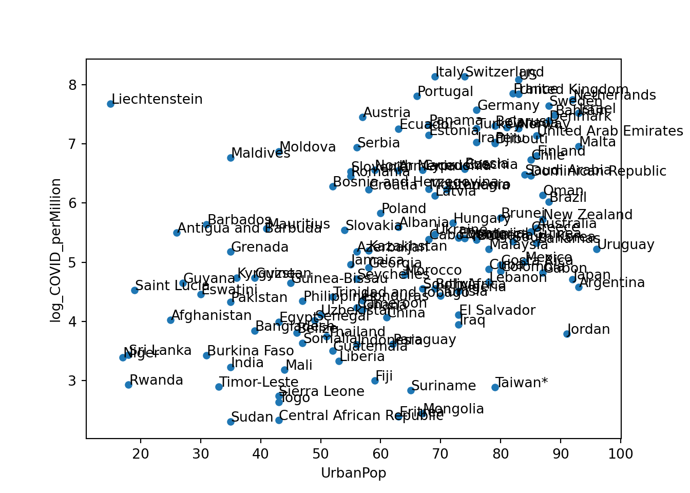
E voilá: a gyanús kis államunk a magas esetszámával a kis városi népesség arány ellenére Lichtenstein! :) Érdekes észrevenni még, hogy pl. Taiwan elég jól áll: a városi népesség arányához képest elég alacsony az esetszáma! Magyarország, ha jól szemmelverjük, akkor látható, hogy gyakorlatilag pont a fő csapásirány közepén van kb: pont annyi nagyjából az esetszáma, amennyi a városi népesség aránya alapján “lennie kéne”. :)
Gyakorló feladatok
- Olvassuk be az index_2019_-_pour_import_1_1.csv nevű fájlt, és mentsük el a beolvasott adatokat egy PressLiberty nevű data frame-be!
- Vigyázat! A fájlban tizedesvesszők vannak tizedes pont helyett! Használni kell a
read_csvfüggvénydecimalparaméterét! Meg kell a paraméterben adni, hogy a tizedeshelyeket a','karakter jelöli!
- Vigyázat! A fájlban tizedesvesszők vannak tizedes pont helyett! Használni kell a
- A PressLiberty data frame-ből csak az angol országnév (EN_country) és a 2019-es sajtószabadsági index (Score 2019) oszlopkra lesz szükségünk. A sajtószabadsági indexben az alacsonyabb érték jelent szabadabb sajtót egy országban. A többi változót töröljuk ki a data frame-ből!
- A szűkített PressLiberty data frame oszlopainak neve legyen Country és PressLiberty!
- Változtassuk meg az Egyesült Államok nevét “United States”-ről “US”-re a PressLiberty data frame-ben, hogy az összeköthető legyen a corona_extended data frame-el az országneveken keresztül!
- Inner Join művelet segítségével vezessük át a sajtószabadsági index vonatkozó adatokat a corona_extended data frame-be!
- Ábrázoljuk a corona_extended data frame-ben a kapcsolatot a log_COVID_perMillion és PressLiberty ismérvek között pontdiagramon! Értelmezze röviden szövegesen is a kapcsolatot! Logikus-e a kapcsolat iránya?
- Vizsgáljuk meg a PressLiberty eloszlását hisztogramon!
- Adjuk hozzá a corona_extended data frame-hez a PressLiberty logaritmusát log_PressLiberty néven!
- Nézzük meg a korrelációs mátrixot a log_COVID_perMillion, PressLiberty és log_PressLiberty ismérvek között! Volt-e értelme a logaritmus alkalmazásának? Válaszát röviden indokolja!
- Ábrázoljuk a corona_extended data frame-ben a kapcsolatot a COVID_perMillion logaritmusa és a PressLiberty logaritmusa között pontdiagramon! Az egyes pontokon szerepeljen az országok neve is!
- Van-e olyan ország, amelyik a két ismérv kapcsolatát leíró általános tendenciához képest eltérően viselkedik? Válaszát röviden indokolja!
Gyakorló feladatok megoldása
1. feladat
## <class 'pandas.core.frame.DataFrame'>
## RangeIndex: 180 entries, 0 to 179
## Data columns (total 14 columns):
## # Column Non-Null Count Dtype
## --- ------ -------------- -----
## 0 ISO 180 non-null object
## 1 Rank2019 180 non-null int64
## 2 FR_Country 180 non-null object
## 3 EN_country 180 non-null object
## 4 ES_country 180 non-null object
## 5 Score A 180 non-null float64
## 6 Sco Exa 180 non-null float64
## 7 Score 2019 180 non-null float64
## 8 Progression RANK 180 non-null int64
## 9 Rank 2018 180 non-null int64
## 10 Score 2018 180 non-null float64
## 11 Zone 180 non-null object
## 12 AR_country 180 non-null object
## 13 FA_country 180 non-null object
## dtypes: float64(4), int64(3), object(7)
## memory usage: 19.8+ KB2. feladat
## <class 'pandas.core.frame.DataFrame'>
## RangeIndex: 180 entries, 0 to 179
## Data columns (total 2 columns):
## # Column Non-Null Count Dtype
## --- ------ -------------- -----
## 0 EN_country 180 non-null object
## 1 Score 2019 180 non-null float64
## dtypes: float64(1), object(1)
## memory usage: 2.9+ KB3. feladat
## <class 'pandas.core.frame.DataFrame'>
## RangeIndex: 180 entries, 0 to 179
## Data columns (total 2 columns):
## # Column Non-Null Count Dtype
## --- ------ -------------- -----
## 0 Country 180 non-null object
## 1 PressLiberty 180 non-null float64
## dtypes: float64(1), object(1)
## memory usage: 2.9+ KB5. feladat
corona_extended = pd.merge(corona_extended, PressLiberty, how='inner', on='Country')
corona_extended.info()## <class 'pandas.core.frame.DataFrame'>
## RangeIndex: 115 entries, 0 to 114
## Data columns (total 8 columns):
## # Column Non-Null Count Dtype
## --- ------ -------------- -----
## 0 Country 115 non-null object
## 1 COVID_Cases 115 non-null int64
## 2 Pop 115 non-null int64
## 3 PopDensity 115 non-null int64
## 4 UrbanPop 115 non-null int32
## 5 COVID_perMillion 115 non-null float64
## 6 log_COVID_perMillion 115 non-null float64
## 7 PressLiberty 115 non-null float64
## dtypes: float64(3), int32(1), int64(3), object(1)
## memory usage: 6.9+ KB6. feladat
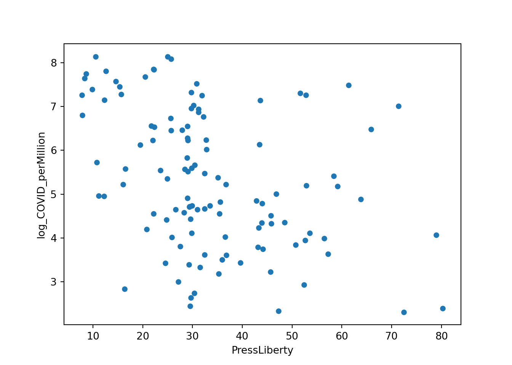
Úgy látszik, hogy a a kapcsolat ellentétes irányú: a sajtószabadsági index növekedésével jellemzően csökken az esetszám. Mivel a magasabb index jelenti a kevésbé szabad sajtót, így első olvasatra nem logikus a kapcsolat iránya: kevésbé szabad sajtóval rendelkező országokban kevesebb az esetszám egymillió főre nézve. De egy picit belegondolva lehet logikus a dolog: a szabadabb sajtóval rendelkező országok jellemzően gazdagabb országok is. Feltehetően ilyen országokban a COVID tesztelésre is több erőforrás jut.
7. feladat
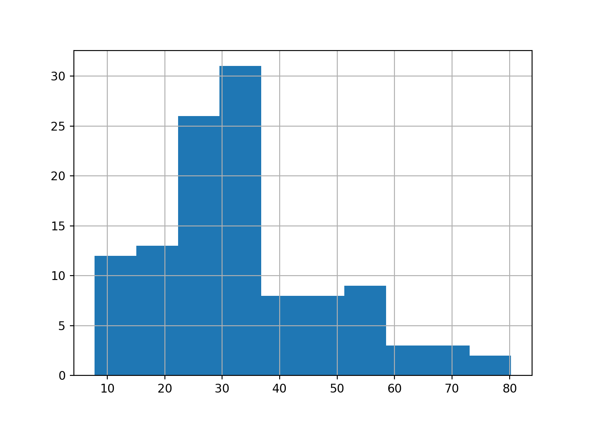
Az eloszlás némileg jobbra elnyúló, vannak felső irányban kiugró értékek. Érdemes lehet logaritmust alkalmazni az oszlopon.
8. feladat
corona_extended['log_PressLiberty'] = np.log(corona_extended['PressLiberty'])
corona_extended.info()## <class 'pandas.core.frame.DataFrame'>
## RangeIndex: 115 entries, 0 to 114
## Data columns (total 9 columns):
## # Column Non-Null Count Dtype
## --- ------ -------------- -----
## 0 Country 115 non-null object
## 1 COVID_Cases 115 non-null int64
## 2 Pop 115 non-null int64
## 3 PopDensity 115 non-null int64
## 4 UrbanPop 115 non-null int32
## 5 COVID_perMillion 115 non-null float64
## 6 log_COVID_perMillion 115 non-null float64
## 7 PressLiberty 115 non-null float64
## 8 log_PressLiberty 115 non-null float64
## dtypes: float64(4), int32(1), int64(3), object(1)
## memory usage: 7.8+ KB9. feladat
## log_COVID_perMillion PressLiberty log_PressLiberty
## log_COVID_perMillion 1.000000 -0.381829 -0.430291
## PressLiberty -0.381829 1.000000 0.944278
## log_PressLiberty -0.430291 0.944278 1.000000Volt értelme, a sajtószabadsági indexnek jobbra elnyúló az eloszlása, így a kilógó értékek hatását az egymillió főre vetített esetszámmal vett kapcsolatára tudta mérsékelni a logaritmus. Ez onnan látszódik, hogy a korreláció abszolút értékben \(0.05\) egységgel nőtt. Nem akkora a javulás, mint a városi népesség arányával vett korrelációnál tapasztaltuk, de azért észrevehető.
10. feladat
fig = corona_extended.plot.scatter(x="log_PressLiberty", y="log_COVID_perMillion")
for sorszám, szöveg in enumerate(corona_extended.Country):
fig.annotate(szöveg, (corona_extended.log_PressLiberty.iat[sorszám]+0.05, corona_extended.log_COVID_perMillion.iat[sorszám]))
plt.show()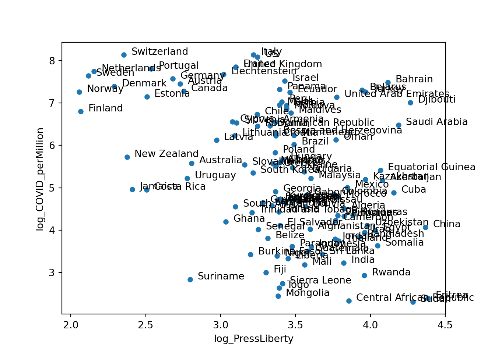
Úgy látszik, hogy pl. a dél-amerikai Suriname-ben még a viszonylag rossz sajtószabadsági indexhez képest is kevés esettalálható egymillió főre. Bahrainben és Szaúd-Arábiában viszont épp, hogy magas az esetszám a kevésbé szabad sajtó ellenére is. Itt lehet az olajvagyonból futja tesztelésre is úgymond. :)